1. What is an Intercom System?
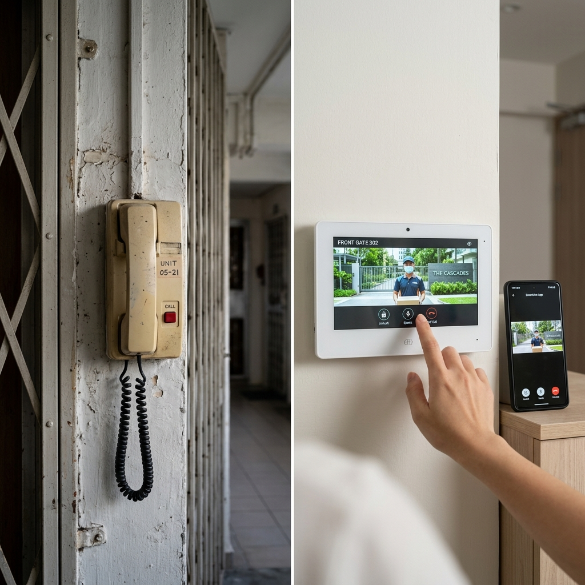
An intercom system is a standalone communication network designed for voice and video conversation within a building or property.
Unlike telephone systems that connect to external phone lines, intercoms operate as closed networks dedicated to internal communication and visitor management. The core function of an intercom is simple: enable two people in different locations within the same property to communicate instantly. A visitor at your front gate can speak with someone inside the house. An employee in one office can call a colleague in another department. A person trapped in a lift can reach security personnel for help.
The Evolution of Intercom Technology
Intercom systems have transformed dramatically over the past six decades:
1960s-1980s: Audio Handsets
Early intercoms were simple audio-only devices with handsets similar to telephones. A visitor pressed a button at the door station, a bell rang inside, and residents picked up a handset to speak. These systems used basic analogue circuitry and required dedicated wiring between the door and indoor stations. Door release was manual—press a button on the handset to trigger a relay that unlocked the gate or door.
1990s: Video Integration
The introduction of small CRT (cathode ray tube) monitors brought visual verification to intercoms. Residents could now see who was at the door before opening. Video quality was modest—grainy black-and-white or low-resolution color—but the security improvement was significant. These systems required more complex wiring: separate cables for audio, video, and power.
2000s: Digital IP Systems
Network-based intercoms emerged, using the same infrastructure as computers and security cameras. IP (Internet Protocol) intercoms transmitted digital audio and video over CAT6 Ethernet cables, enabling higher quality, longer distances, and integration with other building systems. Recording became standard, and systems could support hundreds or thousands of stations on a single network.
2010s-Present: Cloud and Mobile Apps
Modern intercoms connect to the internet, allowing residents to answer door calls on their smartphones from anywhere in the world. Cloud-based platforms manage user permissions, log all visitor interactions, and integrate with access control systems. Facial recognition, QR codes, and temporary digital keys have replaced traditional methods of visitor management.
What Intercoms Are NOT
Understanding what an intercom is not helps clarify its purpose:
Not a Telephone System
Intercoms do not connect to the public switched telephone network (PSTN) or make external calls. You cannot dial a phone number on an intercom. If a system allows calling outside phone numbers, it's a business telephone system (PABX) with door phone capability, not a pure intercom. We cover this distinction in detail in Section 3.
Not a PA (Public Address) System
PA systems broadcast announcements one-way to multiple locations—a voice from the office goes to all zones, but listeners cannot reply. Intercoms are primarily two-way: both parties can speak and hear each other in real-time conversation. Some advanced intercoms include PA capability as an additional feature, but it's not their primary function.
Not a Video Doorbell
Standalone video doorbells like Ring or Nest connect wirelessly to your home WiFi and send notifications to your phone. They're designed as retrofit products for homes without existing intercom infrastructure. Intercoms are complete wired systems with dedicated indoor monitors, multiple stations, and professional-grade reliability. Video doorbells cost $150-$400 and run on batteries or doorbell transformers. Intercom systems cost $900-$5,000+ and integrate with property access control, multiple indoor monitors, and building management systems.
Not a Walkie-Talkie
Walkie-talkies are portable handheld radios for mobile communication across distances (typically 1-5km depending on terrain and power). Intercoms are fixed installations with stations mounted at specific locations. Walkie-talkies use radio frequencies and require users to press-and-hold a talk button (half-duplex). Modern intercoms support full-duplex communication where both parties can speak simultaneously, just like a phone call.
Modern Intercom Capabilities
Today's intercom systems extend far beyond simple voice communication:
High-Definition Video
Modern video intercoms feature 2-megapixel to 4-megapixel cameras with wide-angle lenses (typically 140-180 degrees) and HD or Full HD resolution. Night vision with infrared LEDs allows clear identification of visitors even in complete darkness. Some models include dual cameras—one for facial recognition at eye level, another for package detection at waist level.
Mobile App Integration
Residents receive push notifications when someone presses the door button, see live video on their smartphones, speak with visitors through the app, and release the door remotely—whether they're at home, in the office, or traveling abroad. Call logs and recorded video provide a complete history of all visitor interactions.
Access Control Integration
Many modern door stations include built-in card readers (RFID, NFC), numeric keypads, fingerprint sensors, or facial recognition cameras. Authorized users can enter without calling anyone—they simply tap their card, enter their PIN, or look at the camera. This unifies visitor management (unknown guests call for entry) with resident access (authorized users enter directly) in a single device.
Call Recording and Logging
IP-based intercoms automatically capture snapshots or video recordings of everyone who calls, time-stamped and stored in cloud or local servers. This creates an audit trail for security purposes and helps residents identify previous visitors. Some systems also record the audio conversation, though this requires compliance with Singapore's Personal Data Protection Act (PDPA) regarding notification and consent.
Weather Resistance and Durability
Outdoor intercom stations are built to IP65 or IP66 weatherproof ratings, withstanding Singapore's tropical climate: heavy rain, high humidity, intense sun, and temperature variations. Metal housings (stainless steel or aluminum) resist corrosion, and conformal coating protects circuit boards from moisture.
Where Intercoms Are Used
Residential Properties
Landed homes, bungalows, and terraced houses install intercoms at main gates and side entrances. Indoor monitors are placed in kitchens, living rooms, or bedrooms, allowing residents to vet visitors without walking to the gate. Systems typically support 1 door station and 2-8 indoor monitors.
Condominiums and Apartments
Multi-unit residential buildings use visitor call panels at main entrances where visitors select a unit number to call. The system routes the call to that unit's indoor monitor or mobile app. Residents see and speak with the visitor, then grant access by pressing a button that releases the lobby door. Large condominiums may have 50 to 5,000 individual units, multiple entrance stations, and guard house integration.
Offices and Commercial Buildings
Businesses install intercoms at reception areas to vet visitors before granting access. Some offices use intercom networks for internal communication between departments, meeting rooms, or floors—similar to an internal telephone extension system but dedicated to building communication rather than external calling.
Industrial Facilities
Warehouses, factories, and manufacturing plants deploy intercoms at loading bays, perimeter gates, and between production areas. Noisy industrial environments require intercoms with high-power speakers, noise-canceling microphones, and rugged construction to withstand harsh conditions.
Institutional Settings
Hospitals, schools, prisons, airports, and railway stations use specialized intercom systems for operational communication and emergency response. These may include hundreds of stations networked together, allowing selective calling between specific locations and centralized monitoring at control rooms.
Emergency Communication
Building codes require intercoms in certain locations for safety: inside elevator cabins (to call for help if trapped), handicap-accessible toilets (emergency call buttons), car park help points (for drivers needing assistance), and fire stairwells (for firefighter coordination). These are often one-way call systems where the person presses a button to alert security or building management.
Intercom systems have evolved from simple voice boxes to sophisticated communication and security platforms. They serve a single unifying purpose: enable people within a property to communicate effectively, verify visitors before granting access, and maintain secure control over who enters the premises. The technology may vary—from basic audio handsets to cloud-connected video systems with artificial intelligence—but the fundamental goal remains constant: safe, convenient communication within your property's boundaries.
2. Intercom vs Other Systems
Intercom systems are often confused with other communication technologies. While there's some overlap in functionality, each system serves distinct purposes. Understanding these differences helps you choose the right solution for your needs.
Intercom vs Walkie-Talkies
Walkie-Talkies: Mobile Communication
Walkie-talkies are portable handheld radios designed for mobile communication across distances. Security guards patrolling a facility, event staff coordinating crowd management, or construction workers moving across a site carry walkie-talkies to stay in contact while on the move.
Key characteristics:
- Portable: Handheld devices clipping to belt/pocket
- Radio Frequency: Transmit via VHF/UHF, no cables
- Range: 1-5km urban, up to 30km open terrain
- Half-Duplex: Press-to-talk (one person at a time)
- Group: Everyone on same channel hears all
- No Installation: Works out-of-the-box
- Battery Powered: Requires regular charging
Intercoms: Fixed Installation
Intercoms are permanently installed at specific locations within a building or property. A visitor stands at a fixed door station at your gate, presses a button, and the call rings at fixed indoor monitors inside your home.
Key characteristics:
- Fixed Location: Mounted at specific doors/rooms/lifts
- Wired Connection: Typically 2-wire, 4-wire, or CAT6
- Unlimited Range: Works across any building size
- Full-Duplex: Simultaneous two-way conversation
- Point-to-Point: Calls directed to specific stations
- Professional Installation: Requires wiring/mounting
- Continuous Power: Powered by AC/PoE (no batteries)
When You Need Both:
Many facilities use intercoms AND walkie-talkies for different purposes. A condominium might have:
• Intercoms for visitor communication (gate stations calling fixed unit monitors)
• Walkie-talkies for security guards on patrol (mobile communication while walking grounds)
Each serves its purpose: intercoms for location-based communication, walkie-talkies for people-based communication.
Intercom vs PA (Public Address) Systems
PA Systems: One-Way Broadcasting
PA systems broadcast announcements from a single source to multiple speakers across a facility. A shopping mall plays background music and makes promotional announcements. A factory announces shift changes across the plant.
- One-Way: Audio flows to speakers only, no reply possible
- Broadcasting: Same message to all selected zones
- Mass Communication: Designed to reach many simultaneously
- Amplifier-Based: Central amplifier drives passive speakers
Intercoms: Two-Way Conversation
Intercoms enable dialogue between specific locations. A visitor calls, you answer, you have a conversation, and decide whether to grant access. Both parties can speak and hear.
- Two-Way: Both parties speak and listen in real-time
- Targeted: Call goes to specific station(s) only
- Interactive: Questions/answers can be exchanged instantly
- Individual Addressing: Call specific rooms/departments
When They Overlap: Some advanced intercom systems include PA capability as a secondary feature. A building manager might use the intercom infrastructure to broadcast fire drill announcements. However, the primary design remains targeted, interactive dialogue.
Intercom vs Video Doorbells
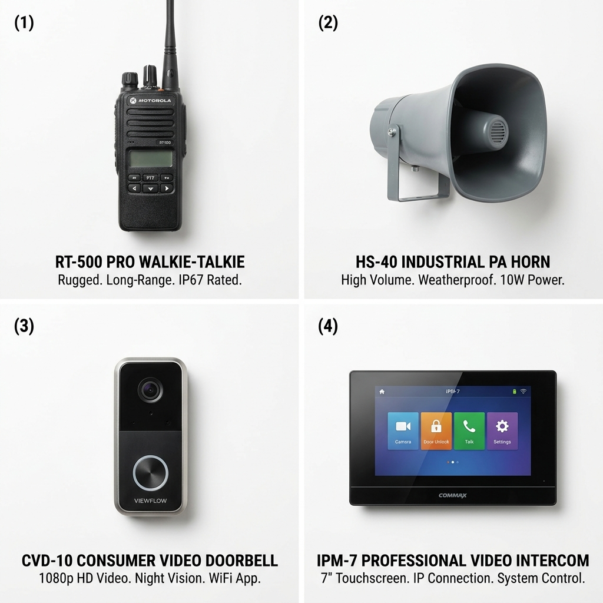
Video Doorbells: Standalone WiFi Devices
Video doorbells like Ring, Nest Hello, or Arlo replace your existing doorbell button. They connect to WiFi and send video to your smartphone. While excellent for retrofits, they cost $150-$400 and depend entirely on internet and phone connectivity.
Intercoms: Complete Wired Systems
Intercoms are professional systems with dedicated indoor monitors (7-10 inch screens) and wired infrastructure (2-wire/CAT6). They integrate with building access control, work offline if needed, and cost $900-$5,000+ for a complete residential system.
| Feature | Video Doorbell | Intercom System |
|---|---|---|
| Indoor Display | Mobile phone only | Dedicated monitor(s) + optional mobile |
| Installation | DIY, 30 minutes | Professional, 4-8 hours |
| Wiring | Battery or doorbell wire | Dedicated intercom cabling |
| Internet Dependency | Required for all functions | Optional (works offline) |
| Multiple Doors | One per door, separate apps | Unified system for all doors |
| Indoor Monitors | None (phone only) | 1-8 monitors supported |
| Power | Battery or 16-24V transformer | AC transformer or PoE |
| Reliability | Depends on WiFi signal | Wired, very reliable |
| Elderly Users | Must use smartphone | Dedicated monitor, push-button answer |
When Video Doorbells Make Sense:
- Rental properties where permanent installation isn't allowed
- Quick upgrade for homes without existing infrastructure
- Budget-conscious homeowners comfortable with mobile-only interface
- Simple single-entrance applications
- Tech-savvy users who always have phones nearby
When Intercoms Make Sense:
- New construction or major renovation projects
- Multiple entry points (main gate, side gate, back door)
- Elderly users needing easy-to-use dedicated monitors
- Integration with property access control (gates, locks)
- Condominiums and multi-unit buildings
- Priority on reliability and wired robustness
Intercom vs Building Telephone Systems
This is addressed in detail in Section 3, but the key distinction: intercoms are for internal communication only (no external phone calls), while building telephone systems (PABX, key phone, IP phone) connect to outside lines for business telephony. Both can handle door phones, but their primary purposes differ fundamentally.
📞 Does Your Office Also Need a Phone System?
If your office requires external telephony — SIP trunks, desk phone extensions, call queues, or a replacement for your Panasonic PBX — that is a different system to an intercom. See our Office Telephone Systems Guide for a full comparison of IP phone systems, SingTel SIP trunks, and how Fanvil door phones can integrate with your office phone system.
3. How Intercom Systems Work
Understanding the fundamental components and signal flow of an intercom system helps you make informed decisions about installation, troubleshooting, and system expansion. While modern intercoms can be sophisticated, the core principles remain straightforward.
Core Components
Every intercom system, regardless of complexity, consists of four essential elements:
1. Door Station (Outdoor Unit)
The door station is the visitor-facing component mounted outside your property—at the gate, front door, or building entrance. It contains:
- Microphone: Captures the visitor's voice. Outdoor intercoms use noise-canceling microphones to reduce wind, rain, and traffic noise. Microphone sensitivity is calibrated for typical speaking distance (30-60cm from the unit).
- Speaker: Outputs your voice so the visitor can hear your response. Outdoor speakers must be loud enough (typically 85-95 dB) to be heard in noisy environments and weather-resistant to prevent water damage.
- Camera (Video Intercoms): Captures visual image of the visitor. Modern door stations use 2-4 megapixel cameras with wide-angle lenses (140-180 degrees) to show not just the visitor's face but also if they're alone and what they're carrying. Infrared LEDs (typically 6-12 LEDs) provide night vision in complete darkness up to 1.5-3 meters.
- Call Button: The visitor presses this to initiate the call. Simple systems have a single button. Multi-unit systems have a numeric keypad or touchscreen directory where visitors select which unit to call.
- Door Release Relay: An electronic switch that triggers when you press the unlock button, sending power to your electric lock, magnetic lock, or gate motor to grant access. Relays are rated for the voltage and current of your lock (typically 12V DC or 24V DC, 1-3 amps).
- Weatherproof Housing: Door stations are built to IP65 or IP66 ratings, meaning they're completely sealed against dust and protected against water jets from any direction. Materials include stainless steel, aluminum, or ruggedized polycarbonate plastic. Singapore's tropical climate demands corrosion resistance and UV stability.
- Card Reader / Keypad (Optional): Many modern door stations integrate access control, allowing authorized users to enter without calling anyone. RFID card readers support proximity cards, numeric keypads accept PIN codes, and advanced models include fingerprint sensors or facial recognition cameras.
2. Indoor Station (Monitor or Handset)
The indoor station is where you receive and respond to calls from the door station. This can be:
Handset Intercom (Audio-Only)
Similar to a telephone handset, you pick it up when the door rings, speak into it, and hang up when done. Handset intercoms are simple, familiar to elderly users, and provide audio privacy (conversation isn't broadcast to the room). They're typically audio-only, though some models have small screens showing which door is calling.
Video Monitor (Hands-Free)
A wall-mounted screen (typically 7-10 inches) that displays video from the door camera. Modern monitors are touchscreen, allowing you to answer with a button press, adjust volume, view recorded visitors, and configure settings. Hands-free operation means you don't pick up anything—speak toward the monitor and it transmits your voice via built-in microphone and speaker.
Indoor stations include:
- Screen: LCD/OLED, 7-10 inch, up to 1080p
- Speaker: Internal, typically 1-2 watts
- Microphone: Built-in for hands-free
- Answer/Release: Touchscreen or physical
- Volume: Ringtone and talk levels
- Power: Low-voltage (12-24V) or PoE
3. Controller (Brain of the System)
The controller manages call routing, signal processing, and power distribution. In simple systems, the controller might be built into the door station or indoor monitor. In complex systems, it's a separate unit.
- Call Routing: Manages logic for which monitors ring when a door button is pressed.
- Signal Processing: Amplifies signals, filters noise, and mixes audio sources during calls.
- Power Distribution: Supplies regulated current to stations and locks via the signal cabling.
- Integration Interface: Connects with access databases, CCTV recording, and BMS logging.
4. Wiring (Communication Medium)
Wiring carries signals and power between components. The type of wiring depends on the intercom technology:
2-Wire Systems
A single pair of wires carries audio and power. Simple and economical for basic homes. Typical range: 100-300m.
4-Wire Systems
Separate pairs for audio and video signals. Used in traditional analogue video intercoms often with coaxial cable.
CAT6 Ethernet Cable
IP-based standard. Carries HD video, audio, and power (PoE) in a single digital cable. Max 100m per run.
Wireless (WiFi/4G)
Eliminates cable runs but introduces dependency on signal quality and external internet connectivity.
Signal Flow: What Happens When Someone Presses Your Doorbell
Let's trace a complete interaction from button press to door opening:
Visitor Presses Button
The visitor presses the call button, closing an electrical contact that signals the system a call is being initiated.
Signal Transmits to Indoor Station
A "call request" (voltage change or SIP INVITE packet) is sent to the indoor monitor(s). The controller determines which monitors ring.
Indoor Station Rings
The monitor wakes up, plays a ringtone, and displays live video. You see the visitor and decide whether to answer.
You Answer the Call
Answering establishes a two-way audio connection. Echo cancellation filters out speaker-to-microphone feedback for a clear conversation.
Conversation
You speak with the visitor to verify their purpose. This vetting stage is the core security function of the intercom.
Door Release (Optional)
Pressing the release button triggers the door station's relay, unlocking the electric/magnetic lock or opening the gate for a preset duration.
Call Ends
The connection terminates, returning the system to standby. Recordings are saved with timestamps if the system has logging capability.
Communication Types: How Audio is Transmitted
Full-Duplex
Both parties speak and hear simultaneously, like a phone call. Uses echo cancellation to prevent feedback. standard in modern IP systems.
Half-Duplex
Only one person can speak at a time. Requires waiting for silence before replying. Common in budget analogue models.
Press-to-Talk (PTT)
Manual audio activation. Hold button to speak, release to listen. Used in very noisy industrial and emergency environments.
Power Distribution in Intercom Systems
How power is delivered affects installation complexity and reliability:
Centralized Power
A single transformer powers all stations. Easier to maintain and back up with batteries, but susceptible to voltage drop over long cable runs.
Distributed Power
Small adapters at each station. Simple to install without cross-building wiring, but requires outlets everywhere and is hard to back up.
Power over Ethernet (PoE)
Data and power on one CAT6 cable. Centralized at the network switch, professional, and very easy to protect via UPS.
Analogue vs Digital Signal Processing
Analogue Signals
Continuous electrical waveforms represent audio/video. Simple and robust but degrades over distance, susceptible to interference, and capped at standard definition quality.
Digital Signals
Data converted into 1s and 0s using SIP protocol. Maintains perfect quality regardless of distance (within network limits), allows for encryption, and supports HD/4K resolutions.
System Architectures: How Stations Connect
Point-to-Point
One door station wired directly to one monitor. Maximum simplicity for basic homes.
Star Topology
All stations wire back to a central controller hub. Used in analogue multi-station systems.
Daisy Chain
Stations linked in series. Reduces cabling but failure in one station can affect the chain.
Network Topology
IP devices on standard network switches. Maximum scalability across buildings or cities.
Inside the Hardware
Door Station Event Loop
- Detection: Microcontroller senses button press.
- Activation: Firmware wakes camera and IR LEDs.
- Signaling: Tones (Analogue) or SIP INVITE (Digital) sent.
- Audio Ready: Codecs and amplifiers initialized.
- Feedback: Status LED indicates active dialing.
Indoor Station Response
- Wakeup: Screen powers to full brightness.
- Alert: Configuration-based ringtone plays.
- Visual: Live video feed decodes onto display.
- Interactivity: UI displays call control prompts.
- Log: Snapshot image captured and timestamped.
The intercom system is fundamentally a specialized communication appliance. While modern features like facial recognition and cloud integration add sophistication, the core principle remains constant: connect people across distances within a property for secure communication and reliable access control.
4. Types of Intercom Systems
Intercom systems can be categorized in several ways based on their communication capabilities, underlying technology, installation method, scale, and intended application. Understanding these categories helps you identify which type best suits your property and requirements.
By Communication Capability: Audio vs Video
Audio-Only Intercoms
Audio intercoms transmit voice only—no camera, no visual component. The door station has a microphone, speaker, and call button. The indoor station is a handset (like a telephone) or a simple speaker box with buttons.
- • Door Station Cost: $150-$400
- • Indoor Handset Cost: $100-$300
- • Complete System (1 door + 2 handsets): $400-$1,200
When audio-only makes sense:
- Budget-conscious applications prioritized over visual verification.
- Retrofits where only 2-wire cabling exists and running new cables is disruptive.
- Gated communities where visitors are pre-screened at a main guardhouse.
- Harsh environments where camera lenses require frequent cleaning.
- Privacy-conscious users who prefer not to have video recording.
- Elderly users comfortable with traditional telephone-style handsets.
Audio-Video Intercoms
Audio-video intercoms add a camera to the door station and a screen to the indoor station. You see and speak with visitors simultaneously.
- • Door Station Cost: $400-$800
- • Indoor Monitor Cost: $300-$600
- • Complete System (1 door + 1 monitor): $900-$3,000
Visual verification advantages:
- Confirm identity before opening—face matches voice.
- See if visitor is alone or accompanied.
- Observe body language and demeanor.
- Recorded evidence capture for security audit trails.
- Package and delivery uniform verification.
- Night vision capability for 24/7 security.
- Passive monitoring of loitering outside the gate.
By Technology: Analogue vs IP Network
Analogue Intercoms
Traditional systems transmitting continuous electrical signals over dedicated wiring. Proven reliability but limited features.
- Advantages: Proven reliability, simple troubleshooting, no network dependency, lower equipment cost.
- Disadvantages: Limited scalability, standard definition video only, no remote/mobile access, difficult integration.
IP Network Intercoms
Digital packet-based systems using SIP (Session Initiation Protocol). High performance and maximum feature set.
- Advantages: HD/4K video quality, highly scalable, remote mobile app access, SIP integration, cloud recording.
- Disadvantages: Network dependency, higher configuration complexity, cybersecurity management needed, higher initial cost.
Cost Comparison (1 Door + 3 Indoor Stations)
| Component | Analogue System | IP System |
|---|---|---|
| Door Station | $300 | $600 (SIP) |
| Indoor Monitors (x3) | $450 ($150 ea) | $900 ($300 ea) |
| Wiring & Infrastructure | $250 (4-wire/Coax) | $300 (CAT6 + PoE Switch) |
| Power & Peripherals | $100 | $250 (PoE Hub) |
| Installation/Labor | $400 | $600 (Config included) |
| Total Est. Cost | $1,500 | $2,650 |
*Prices are estimated averages. IP systems include redundant features like mobile app, remote access, and cloud sync.
By Installation Method: Wired vs Wireless vs Hybrid
Wired Intercoms
Maximum reliability and security. Immune to WiFi congestion and interference. High labor for cable runs but consistent year-round performance.
Wireless Intercoms
Easy retrofits with minimal disruption. Fast and flexible installation but dependent on WiFi/4G signal quality and battery maintenance.
Hybrid Systems
Optimal balance. Wired door stations for reliability and power, with wireless secondary monitors and mobile app access for convenience.
By Scale: Single-Unit, Multi-Unit, Building-Wide
Residential (Single-Unit)
Typically 1-5 doors for a single family. Direct calling, owner-managed, and simple kitchen/bedroom monitors ($900-$3k).
Condominiums (Multi-Unit)
Directory-based calling for 50-5,000 units. Lobby release, guardhouse sync, and resident database management ($50k+).
Institutional (Building-Wide)
Complex many-to-many communication across large campuses. Schools, hospitals, and airports ($30k-$200k+).
By Application: Residential, Condo, Office, Emergency, Institutional
Residential & Condo
Focus on visitor vetting, gate motor integration, and mobile app convenience for homeowners and apartment residents.
Office & Commercial
Emphasis on receptionist visitor vetting, inter-departmental calling, and integration with employee access control.
Emergency & Institutional
Regulatory safety-first designs for lifts and accessible toilets, or campus-wide systems for coordination in hospitals and airports.
The type of intercom system you need depends on your property size, number of entry points, and specific user requirements. Understanding these categories helps narrow your choices to systems purpose-built for your specific application.
5. Audio Intercoms vs Video Intercoms
One of the first and most consequential decisions when selecting an intercom system is whether you need video capability. This choice affects cost, installation complexity, user experience, and security effectiveness.
Audio-Only Intercoms: Voice Communication
Audio intercoms transmit voice only. The door station has a microphone, speaker, and call button—no camera. The indoor station is either a handset (like a telephone) or a hands-free unit with speaker and microphone.
Component Costs:
- • Door station (audio-only): $150-$400
- • Indoor handset: $100-$300
- • Complete system (1 door + 2 handsets): $400-$1,200
How Audio Intercoms Work:
Visitor presses the call button. Your indoor handset rings or chimes. You pick up the handset (or press the answer button on hands-free models) and speak. "Hello, who is it?" The visitor responds through the door station speaker. You have a voice conversation, decide whether to grant access, and press the door release button if appropriate.
The interaction is purely auditory—you hear the visitor's voice, they hear yours, but neither of you sees the other.
Advantages
- Lower Cost (40-60% Savings): Significant cumulative savings across multiple gates. Audio at all three gates might cost $2,100, while video at all three costs $4,500.
- Simpler Installation: Typically uses 2-wire cabling—a single twisted pair. Thinner, more flexible, and easier to route. Ideal for older building retrofits.
- Higher Reliability: Fewer electronic components (no camera/IR/display) means fewer potential failure points. Typically lasts 15-20 years.
- Sufficient for Known Visitors: Voice recognition of family, regular delivery staff, or domestic helpers is often adequate for residential security.
- Works in Any Lighting: Audio is unaffected by lighting. Whether noon or pitch-black, communication clarity remains constant.
- Privacy Benefits: No recording of visitor faces, reducing data protection obligations and PDPA compliance administrative burden.
Disadvantages
- No Visual Verification: Critical limitation. Voice can be disguised or misrepresented. You miss cues like uniform, ID badges, or suspicious behavior.
- Cannot Verify if Visitor is Alone: Accomplices can stand silently out of voice pickup range, waiting for the door to open. High risk for vulnerable residents.
- No Evidence or Record: Provides no visual record for police or insurance if an incident occurs. Voices are insufficient as legal evidence.
- Feels Outdated: Can reduce perceived property value and project a less professional security image for commercial buildings.
- Limited Situational Awareness: Monitoring is only active during active calls. You cannot proactively check the gate area as you can with video.
Audio-Video Intercoms: Full Communication
Audio-video intercoms add a camera to the door station and a display screen to the indoor monitor. You see and speak with visitors simultaneously.
Component Costs:
- • Door station (with camera): $400-$800
- • Indoor video monitor (7-inch screen): $300-$600
- • Complete system (1 door + 1 monitor): $900-$3,000
How Video Intercoms Work:
Visitor presses call button. Your indoor monitor rings and the screen activates, displaying live video. You see the visitor's face, surroundings, and package legitimacy. You press answer and proceed with simultaneous video—observing actions and reactions while talking. Finally, you unlock the door or terminate the call.
Advantages
- Visual Verification Before Opening: Primary security benefit. Confirm identity, uniform, ID badge, and package purpose before making any decision.
- Enhanced Security: Wide-angle lenses (140-180°) reveal if others are standing nearby or vehicles are parked suspiciously close.
- Recorded Evidence: Automatic snapshots or video capture are timestamped and stored, creating a critical audit trail for police or insurance.
- Situational Awareness: Monitor the gate proactive at any time—check for loitering, delivery status, or weather even when no one is calling.
- Modern Expectation: Increased property value and professional branding—expected standard for "smart homes" and modern offices.
- Night Vision Capability: Integrated IR LEDs illuminate visitors in complete darkness, maintaining 24/7 security verification.
- Access Control Integration: Single device for visitor vetting and resident card/facial recognition entry.
Disadvantages
- Higher Cost (50-150% Premium): Substantially more expensive initial investment multiplied across entry points.
- More Complex Installation: Requires 4-wire/coaxial or CAT6 network configuration (IP addressing, VLANs, PoE).
- Additional Failure Points: Camera sensors, LCD displays, and IR LEDs add complexity beyond simple microphone/speaker.
- Dependent on Lighting: Performance varies with sun glare, backlighting, rain splash, or lens dirt accumulation.
- Maintenance Requirements: Periodic lens cleaning and camera angle adjustments required to maintain optimal field of view.
- Privacy & PDPA Concerns: Organizations must manage personal data, display notices, and comply with collection/retention rules.
Cost Comparison Examples
1. Small Residential (1 Door, 3 Monitors)
2. Condominium (1 Panel, 50 Units)
When Audio-Only Makes Sense
- Known Visitors: Recognized family members or regular service providers (domestic helpers, gardeners).
- Guardhouse Screening: Estates with manned security who have already vetted the visitor's ID at the main gate.
- Tight Budget: Rental properties or basic upgrades where minimal capital expenditure is a priority.
- 2-Wire Constraints: Retrofits in properties where running new CAT6/4-wire cabling is prohibitively expensive.
- Harsh Weather: Coastal or industrial areas where lens maintenance (salt spray/dust) is too burdensome.
- Extreme Privacy: Facilities serving vulnerable populations where visual recording must be avoided.
When Video Makes Sense
- High-Value Security: Homes in higher crime risk areas or properties previously targeted.
- Unknown Visitors: Offices, commercial properties, and showrooms receiving frequent unannounced guests.
- Vulnerable Residents: Elderly living alone or families with young children who must visually verify strangers.
- Liability Records: Commercial properties requiring documented visitor logs for insurance and audit purposes.
- New Builds: Major renovations or new construction where future-proofing is integrated into the plan.
- Resident Expectations: Modern condominiums where visual confirmation and professional-grade security are required.
The Hybrid Approach: Strategic Placement
Some properties deploy both audio and video strategically to balance cost and security. A typical landed property might feature:
- Main Gate: Video Intercom ($1,500) — Primary vetting for unknown visitors.
- Side Pedestrian Gate: Audio Intercom ($600) — Regular use for known staff and family.
- Back Service Entrance: Audio Intercom ($600) — Low traffic for regular vendors.
Vs all-video cost: $4,500
Market Trends and Recommendations
In 2026, 80-90% of new Singaporean installations are video-based. Technical trajectory has seen video equipment costs drop significantly, reducing the "premium" from 200% down to roughly 75-100%.
General Recommendation:
For most residential and commercial applications today, **video intercoms are the recommended choice.** The visual security, evidence capture, and situational awareness far outweigh the narrowing cost premium. Audio-only remains a niche solution for budget retrofits and specific known-visitor environments.
The choice between audio and video is not merely technical—it's a balance of security requirements, budget realities, and user preferences. Understanding these trade-offs ensures the system best protects your property while fitting your practical constraints.
6. One-Way vs Two-Way Communication
Not all intercom applications require full conversation capability. The communication direction—whether both parties can speak and hear each other, or communication flows only one way—fundamentally shapes the system design and appropriate use cases.
Two-Way Communication: Interactive Conversation
Two-way intercoms allow both parties to speak and hear each other, enabling real dialogue. This is the standard configuration for visitor vetting and most intercom applications.
How It Works:
Both the door station and indoor monitor have microphones and speakers. When connected, audio flows in both directions simultaneously (full-duplex) or alternating (half-duplex). You ask questions, the visitor responds, you follow up based on their answer—natural conversation.
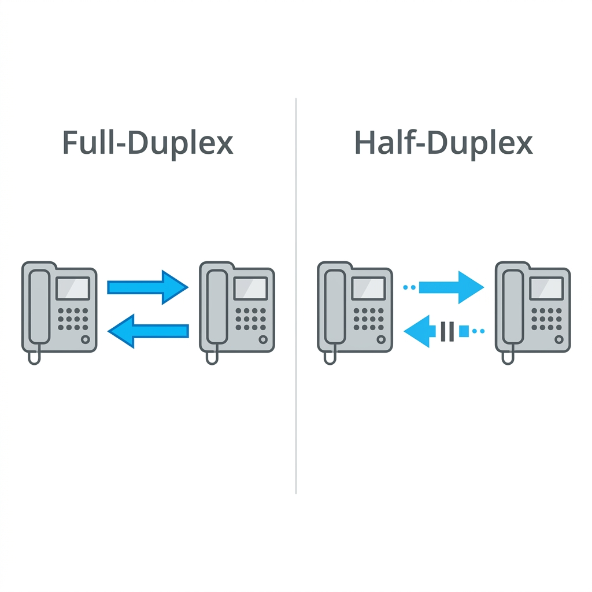
Full-Duplex (Simultaneous)
Both parties can speak and hear at the same time, exactly like a telephone call. Modern IP intercoms and quality analogue systems support full-duplex with digital echo cancellation.
- • Natural, fluid user experience
- • Allows interruptions & acknowledgments
- • Industry standard for professional IP systems
Half-Duplex (Alternating)
Only one person can speak at a time. This is walkie-talkie style communication found in budget analogue systems where echo cancellation is absent.
- • Requires disciplined "speak-pause-listen" flow
- • Cheaper but less efficient
- • Common in legacy or lower-end equipment
Critical Applications for Two-Way Audio
Visitor Vetting (Primary Use)
The classic intercom application. Determine whether to grant access through interactive dialogue. Ask for "Which sender?" or "Package number?" before releasing the gate.
Consultation and Assistance
Receptionists or car park controllers need to troubleshoot issues like "barrier malfunction" or "meeting rescheduling" with visitors in real-time.
Internal Communication
Loading docks calling the warehouse office: "We have a delivery for Stockroom B, can someone sign?" and receiving an immediate response.
Emergency Reassurance
An elevator emergency where security can say: "Help is on the way, you are safe." This human connection is psychologically vital during distress.
One-Way Communication: Alert and Listen
One-way intercoms transmit audio in only one direction. The person at the remote station can speak (or press a button to alert), but they cannot hear the response.
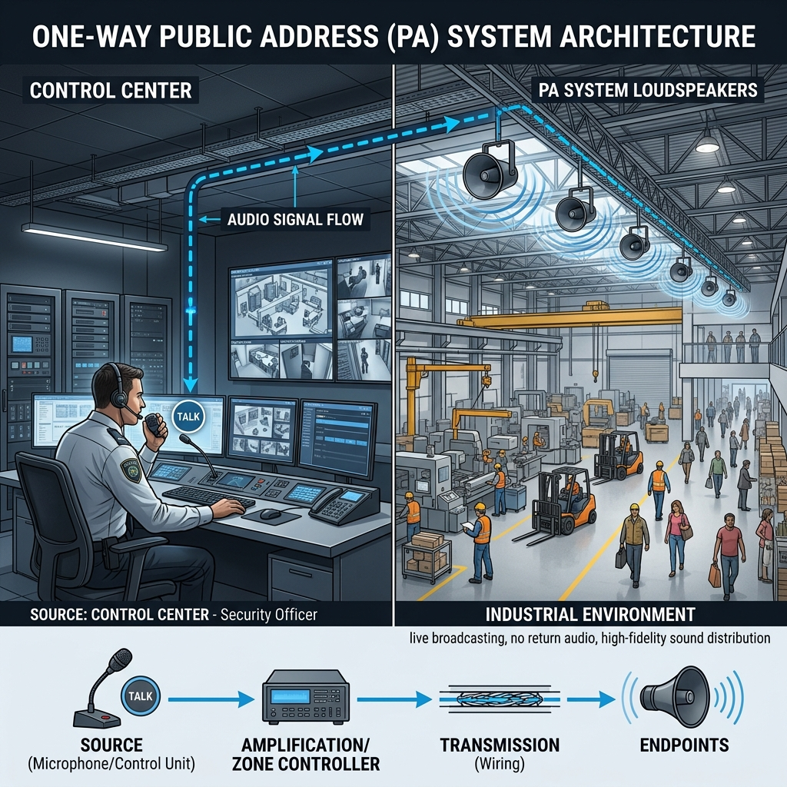
Strategic Application: Public Address & Paging
One-way systems are the foundation of Public Address (PA) and emergency paging architectures. In large factory floors, shopping malls, or schools, communication flows from a central master station to multiple remote endpoints without a return audio path.
While seemingly counter-intuitive, one-way systems serve specific regulatory or budget requirements. The remote station has a microphone but no speaker. When activated, operators can hear the caller, but the caller hears nothing back.
- Cost Constraints: 20-40% cheaper than two-way equivalents.
- Minimum Compliance: Meets baseline BCA requirements for elevators/toilets.
- Simple Alerts: Where the primary need is notifying security rather than conversation.
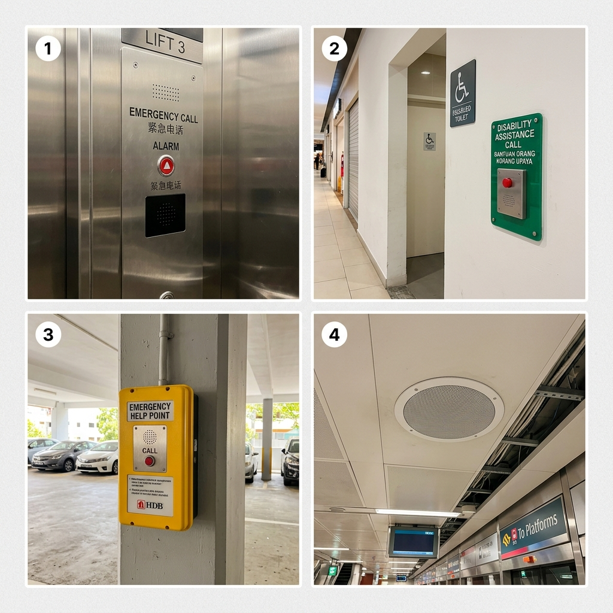
Handicap Toilet Alerts
Minimal alerts where pressing a button signifies a fall or distress. Management hears the caller but doesn't necessarily need to talk back.
Car Park Help Points
Driver reports "barrier won't open," and security resets the system remotely. Simple assistance requests.
Asymmetric & Master-Substation Hierarchy
Advanced architectures provide selective communication capabilities to manage complex environments like hospitals or large estates.
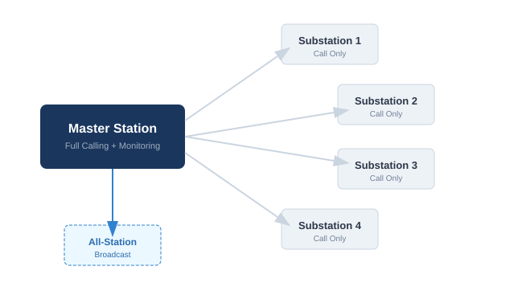
Selective Two-Way
In hospital nurse calls, patients can only call the nurse station. Once connected, full two-way audio starts. Patients cannot call other patient rooms.
Broadcast Mode (One-to-Many)
Building management makes announcements (e.g., "Fire alarm testing") to all residents simultaneously. Residents listen but do not respond.
Regulatory Requirements in Singapore
Singapore's BCA mandates specific communication standards for safety and accessibility. Understanding the gap between compliance and best practice is critical.
| Application | BCA Minimum Requirement | Securevision Best Practice |
|---|---|---|
| Lifts (Elevators) | One-way audio alert | Two-way with monitoring feed |
| Handicap Toilets | Alarm + basic alerts | Two-way for medical assessment |
| Fire Refuge Areas | Emergency call facility | High-clarity two-way coordinated |
Psychological Impact & User Experience
Communication is about more than just data; it's about reassurance. The technical difference between one-way and two-way audio has a direct human cost.
One-Way Drawbacks
- • User Anxiety: "Did they hear me? Is anyone coming?"
- • Decision Paralysis: No instructions given during panic.
- • Information Void: Guardhouse doesn't know situational details.
Two-Way Benefits
- • Reassurance: "Help is on the way, estimated 10 mins."
- • Triage: "How many people are with you?"
- • Human Connection: Reduces stress and prevents further panic.
Architect's Recommendation:
When in doubt, always choose **Two-Way Communication**. The cost savings of one-way systems (averaging 30%) do not justify the loss of user reassurance and vital information gathering in emergencies. One-way should be reserved strictly for broadcast-only PA scenarios.
7. Handset vs Hands-Free Stations
The physical interface through which you communicate with visitors significantly affects user experience, convenience, privacy, and system suitability for different users. The choice between handset-based and hands-free intercom stations is not merely aesthetic—it fundamentally shapes how people interact with the system daily.
Handset Stations: Pick Up to Talk
Handset intercoms operate like traditional telephones. When a call comes in, you physically pick up a handset from its cradle, hold it to your ear, and speak into it. When finished, you hang it back up.
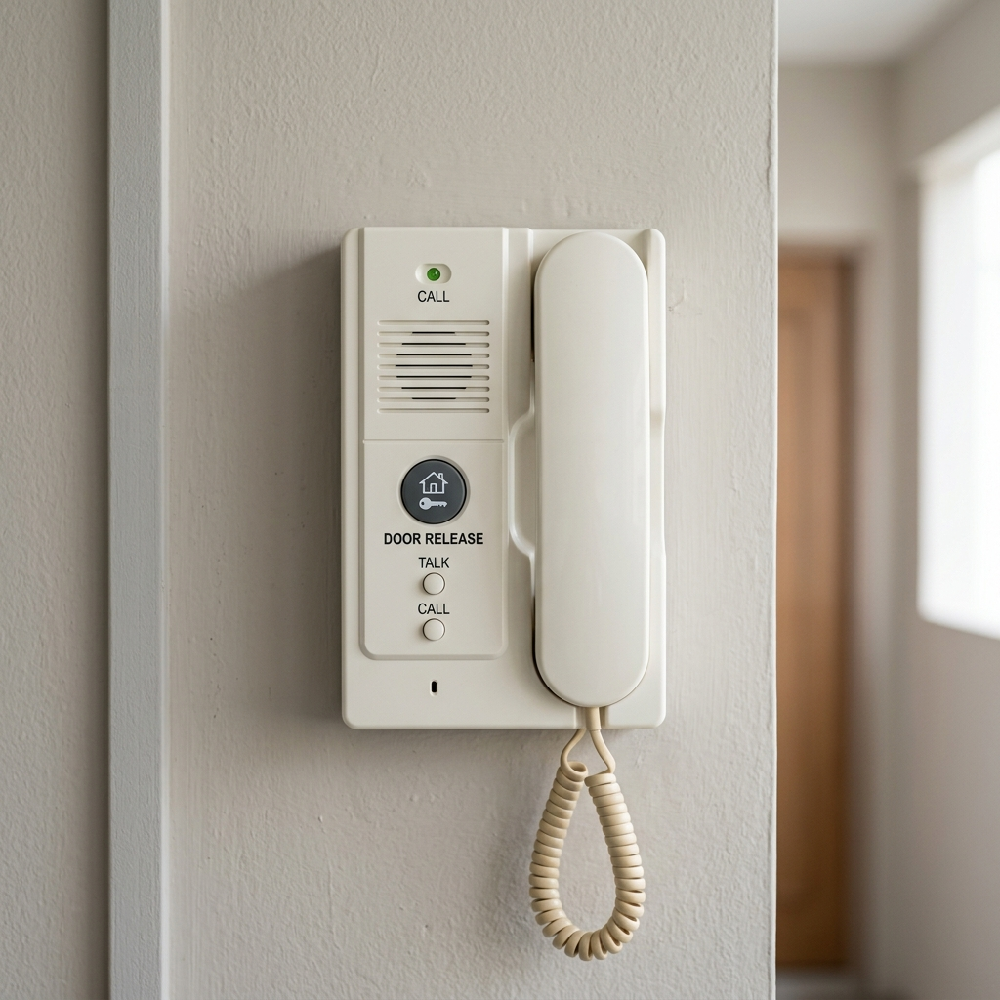
Physical Design & Operation
The indoor station consists of a handset connected by a coiled cord to a base unit. When the doorbell rings, you pick up the handset to establish a private audio connection. This familiar interaction is deeply intuitive, especially for elderly users accustomed to traditional telephony.
- Privacy: Conversation is not broadcast into the room; only you hear the visitor.
- Clarity: Holding the earpiece against your ear isolates sound from ambient room noise.
- Intentionality: Requires a deliberate physical action to answer, preventing accidental activation.
Critical Privacy Advantages
In shared spaces or professional environments, privacy is often the deciding factor in opting for a handset system.
Bedroom Intercoms
Answer discreetly at night without broadcasting the conversation to a sleeping spouse or adjacent rooms.
Private Offices
Maintain confidentiality during meetings. Visitors calling the intercom won't broadcast their business purpose to employees or clients present in the room.
Shared Households
Handle deliveries or service calls without interrupting family activities like homework or TV viewing in communal areas.
Hands-Free Stations: Built-In Communication
Hands-free stations have built-in speakers and microphones. You press an answer button (or the system auto-answers) and speak toward the wall-mounted unit. There is no handset to pick up; all communication is integrated into the panel.
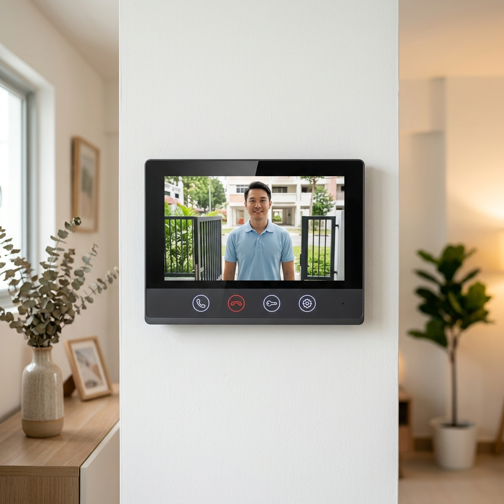
Modern Convenience & Video
Typically designed as sleek, tablet-like panels (7-10 inches), hands-free stations allow users to multitask while speaking. These units are almost always video-enabled, providing a comprehensive visual and audio security interface.
- Convenience: Keep your hands free while cooking, holding a baby, or working.
- Integrated Video: Large LCD/Touchscreens are the industry standard for modern IP visitor vetting.
- Multitasking: Continue your activity while the conversation is broadcast through the built-in speaker.
Comparative Deep-Dive: Which Fits Your Space?
| Metric | Handset Station | Hands-Free Station |
|---|---|---|
| Privacy | Excellent (In-ear only) | Public (Broadcasts to room) |
| Convenience | Low (Must pick up) | High (Speak from distance) |
| Acoustics | Stable (Isolated near ear) | Variable (Affected by room echo) |
| Video Integration | Limited (Usually audio-only) | Native (Primary design mode) |
| Primary Users | Elderly / Privacy-focused | Smart families / Guardhouses |
When Handsets Make Sense
- Bedrooms: Privacy is essential for nighttime calls.
- Private Offices: Client confidentiality is paramount.
- Technology-Averse Users: Familiar traditional interface is intuitive.
- Shared Spaces with High Traffic: Conversations won't disrupt others.
When Hands-Free Makes Sense
- Kitchens: Hands are frequently occupied with cooking or cleaning.
- Security Posts: Guardhouses must multitask while communicating.
- Modern New Builds: Sleek aesthetics and app-like touchscreens.
- Wheelchair Users: Easier interfaces for mobility-challenged users.
Hybrid Systems: The Dual-Mode Best of Both Worlds
Some premium intercom stations support both handset AND hands-free operation in a single device. The base unit includes a built-in speaker/mic for the kitchen, while the included handset can be used for private calls.
The Architect’s Strategy:
For optimal property design, we recommend a **Mixed Deployment**: Install hands-free video monitors in communal areas like kitchens and living rooms for convenience, and handset-equipped monitors in master bedrooms and private offices to ensure critical privacy.
8. Traditional Analogue vs IP Network Intercoms
The technological foundation of your intercom system—whether it uses traditional analogue signaling or modern IP network architecture—fundamentally determines its capabilities, scalability, installation requirements, and future flexibility.
Analogue Intercom Technology
Analogue intercoms have been the standard since the 1960s, transmitting continuous electrical signals over dedicated wiring. They are essentially closed electrical circuits that translate sound waves into varying voltages.
The Signal Flow
Voice creates mechanical vibrations in the diaphragm, which are converted into analogue voltage waveforms. These travel directly down the wire to the speaker with no digital processing or packetization.
Wiring & Topology
Typically uses 4-wire or 2-wire "Star Topology" configurations. Each device must be hard-wired back to a central controller, creating labor-intensive expansion requirements.
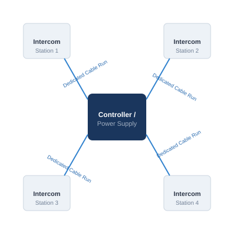
Advantage: Proven Reliability
Analogue systems are the "utility" of the intercom world—functioning for decades with zero software dependencies. In Singapore’s tropical humidity, their simple circuitry offers inherent robustness against network outages or firmware glitches.
IP Network Intercom Technology
IP intercoms transmit digital data packets over standard CAT6 networks. They operate like computers on a network, using SIP (Session Initiation Protocol) to coordinate high-definition voice and video calls.
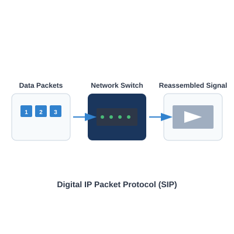
How Digital Communication Works
Voice and video are sampled, or "packetized," into digital data. These packets travel across standard network switches and are reassembled at the destination. This allows for **unlimited distance** and **superior HD resolution**.
- PoE Efficiency: A single CAT6 cable carries both data and power.
- Unlimited Scalability: Just plug a new station into an available network port.
- Remote Management: Update firmware and monitor health across the entire estate remotely.
1080p Full HD
Crystal-clear facial recognition compared to analogue SD quality.
Mobile Access
Answer door calls from anywhere in the world via smartphone.
System Integration
Seamless connectivity with CCTV, NVRs, and ERP/Access platforms.
Technical Comparison Matrix
| Capability | Traditional Analogue | IP Network Intercom |
|---|---|---|
| Scalability | Limited (Dedicated wires) | Unlimited (Network ports) |
| Video Quality | SD (480 TV Lines) | Full HD to 4K (1080p+) |
| Remote Access | Not Possible (Offline only) | Standard (App Integration) |
| Integration | Proprietary/Hardwired | Standard SIP/ONVIF Protocols |
Transition Path: Moving from Analogue to IP
For properties with aging analogue infrastructure, a "Rip and Replace" strategy isn't always viable. Securevision offers three migration paths:
- Phased Upgrade: Install IP door stations at main entry points first, keeping secondary gates on analogue until the next budget cycle.
- Analogue Converters: Use 2-wire to IP converters to utilize existing cabling for modern digital signaling.
- Full Cloud Migration: Bypass local controllers entirely and connect door stations directly to the SmartPlus cloud platform.
9. Cloud-Based Smart Intercoms
Cloud-based intercoms leverage internet connectivity to remove the need for on-premise servers. By moving the "brain" of the system to the cloud, property managers gain unprecedented flexibility in visitor management.
What is a Cloud Intercom?
Instead of a physical controller hardware unit installed in a server room, a cloud intercom stores its user database and call routing logic on secure remote servers (e.g., AWS or manufacturer-specific clouds like Akuvox SmartPlus).
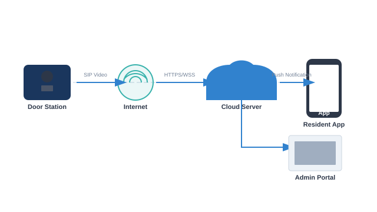
How It Functions
When a visitor presses the button, the door station contacts the cloud server. The cloud identifies the correct resident and sends a push notification directly to their smartphone, regardless of where they are in the world.
- No Local Server: Eliminates $1k-$5k in upfront hardware costs.
- Auto-Updates: Firmware security patches are pushed remotely from the cloud.
- Scale with Software: Adding new residents is a 3-minute web configuration task.
Market Standard: Akuvox SmartPlus
SmartPlus represents the leading cloud platform in Singapore, providing a unified ecosystem for residents and security staff.
Mobile App Experience
Residents use a single app to answer calls, view visitor history, and generate temporary QR codes for guests. The phone in your pocket becomes the master indoor monitor.
Manager Dashboard
Property managers log into a web portal to oversee hundreds of units across multiple buildings, reviewing access logs and managing tenant databases centrally.
Is Cloud Right for You? The Pros & Cons
Advantages
- • Anywhere Access: Answer from Singapore while traveling in Europe.
- • Zero Maintenance: No servers to fail or patch locally.
- • Low Upfront Cost: Pay-as-you-grow subscription model.
Considerations
- • Internet Dependency: Reliable fiber ISP is mandatory for remote use.
- • Ongoing Costs: Requires monthly/annual SaaS subscription fees.
- • Privacy Trust: Video data is stored in manufacturer-managed cloud storage.
The Engineering Verdict: Hybrid Cloud Reliability
"For critical Singaporean complexes, we advise a **Hybrid Cloud-Local Architecture**. This ensures that even if your internet connection fails, the door station can still call the wall-mounted indoor monitors over the local LAN. Cloud services should serve as a mobility layer for remote access rather than a single point of failure."
10. Door Release Mechanisms
The ability to remotely unlock doors, gates, and barriers is one of the most practical functions of an intercom system. Understanding how intercoms trigger locks and the various mechanisms available helps you design effective, reliable access control integration.
The Basic Principle: Relay Output
All intercom door release functionality is built on a simple electrical concept: the relay. A relay is an electrically operated switch. When you press the "door release" button on your intercom monitor, the intercom sends a low-voltage control signal to a relay inside the door station. The relay closes (completes a circuit), allowing electrical current to flow to the lock mechanism, causing it to unlock.
The Analogue Switch
Think of it as a remote-controlled light switch. While you physically flip a regular switch, a relay "flips" electronically when you press the unlock button.
Voltage/Current Separation
Intercoms operate at low voltage (12-24V DC), but locks may require different voltages (up to 240V AC) and higher current (1-5 amps). The relay acts as a safe intermediary.
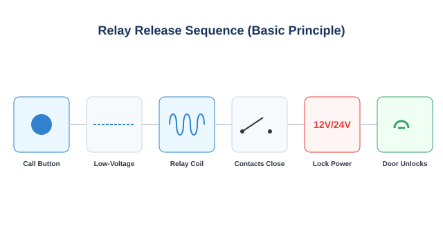
Relay Specifications and Wiring
Door station relays must handle the lock's electrical requirements specifically to avoid hardware failure.
NO (Normally Open)
Contacts are open by default. Energizes and closes current only when the release button is pressed. Most common configuration.
NC (Normally Closed)
Contacts are closed by default. Breaks the circuit when energized. Used for fail-safe locks that unlock when power is cut.
Changeover (C/COM)
Contains both NO and NC contacts on a single pole, providing flexibility for either wiring operation.
Pro Tip: Activation Duration
Most systems allow configurable "pulse" durations. For Electric Strikes, 1-3 seconds is typical. For Maglocks, 3-5 seconds ensures the person has time to push the door open. For Gates, 5-10 seconds is standard to accommodate slow-moving heavy barriers.
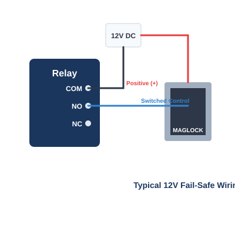
Types of Lock Mechanisms
Intercoms can trigger various lock types, each with distinct characteristics and installation requirements.
Electromagnetic Locks (Maglocks)
An electromagnet on the frame holds a metal plate on the door with 600lbs to 1,200lbs of force. When power is removed, the field collapses instantly, unlocking the door.
- Reliable: No moving parts to wear out.
- Fail-Safe: Best for fire exits (always unlocks on power cut).
- Glass Friendly: U-bracket mounting allows installation without drilling glass.
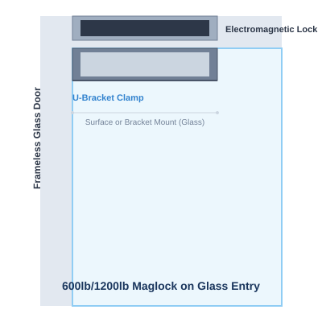
Electric Strikes (Strike Plates)
Replaces the standard strike plate in the frame. When energized, a solenoid pivots a keeper, releasing the latch bolt even if the handle wasn't turned.
- Concealed: Appears like a standard strike plate from the outside.
- Compatible: Works with existing door handles and hardware.
- Fail-Secure Option: Can remain locked during a power failure for higher security.
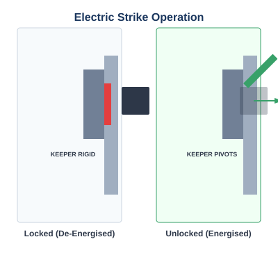
Electric Deadbolts
A motor-driven bolt that provides a 1-inch (25mm) throw into the frame. Much more secure than standard latch bolts.
- High Security: Physically blocks the door with deadbolt strength.
- Positive Locking: No dependency on holding force magnets.
- Fail-Secure: Bolt remains extended when power fails.
Drop Bolts (Vertical Deadbolts)
A vertically-oriented deadbolt that extends into the floor. Essential for double doors with no middle post or narrow aluminum-framed doors.
- Double-Door Solution: No center post (astragal) needed.
- Mechanical Lock: Extremely difficult to force open.
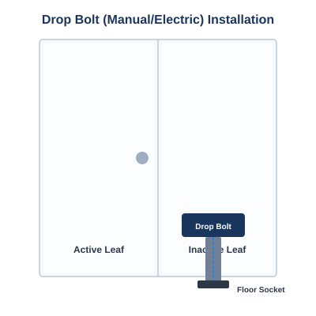
Motorized Gate Operators
For vehicle gates and pedestrian swing gates, intercoms trigger the motor control board via a "dry contact" relay output.
Integration Method
The intercom relay simply closes the circuit across the gate motor's "trigger" input. No power is supplied by the intercom; it just sends the "open" command.
Safety Requirement
Motorized gates must have safety sensors (infrared beams or edge sensors) to prevent the gate from closing on vehicles or people during operation.
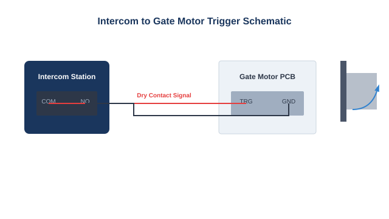
Manual vs. Automatic Door Release
How the visitor actually gains entry depends on the system workflow configuration.
| Method | Workflow | Ideal Use Case |
|---|---|---|
| Manual Release | User answers → Verifies identity → Presses "unlock". | Unknown visitors, high-security sites, residential homes. |
| Automatic Release | User answers → Door unlocks immediately. | Pre-screened visitors, receptions, gated communites with security. |
Door Position Sensors (Monitoring)
Advanced systems use magnetic contact sensors to monitor whether a door is actually open or closed. This adds a critical layer of security intelligence.
- Alarm on Forced Entry: Triggers alerts if the door is opened without a valid unlock command.
- Door Held Open Alert: Notifies management if a door is propped open for too long (e.g., >30 seconds).
- Status Dashboard: Real-time visibility (Green=Closed, Yellow=Authorized Open, Red=Forced).
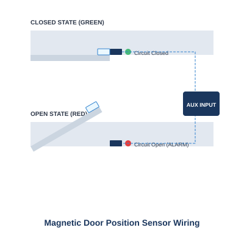
Fail-Safe vs. Fail-Secure (The Regulatory View)
This is the most critical distinction for safety and legal compliance in Singapore.
Fail-Safe (Life Safety)
Unlocks when power is removed. Required on fire exits to ensure people are never trapped during a disaster. **Example: Maglocks.**
Fail-Secure (Security)
Remains locked when power is removed. Appropriate for high-security internal rooms. **Example: Electric Deadbolts.**
Singapore Regulatory Note:
BCA codes mandate that emergency egress routes must be **Fail-Safe**. If a fail-secure lock is used, a mechanical manual override (like a panic bar) is legally required on the exit side.
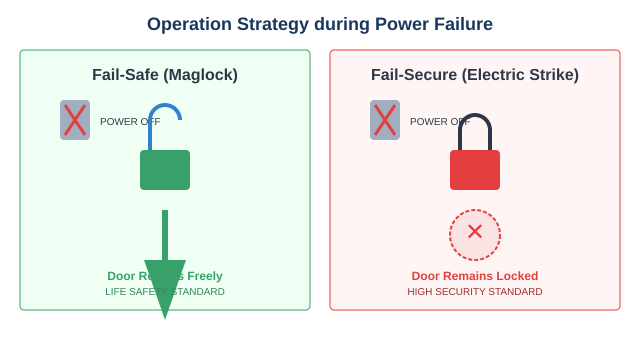
Integration Wiring Best Practices
Proper wiring prevents voltage drops and hardware interference that could lead to intermittent failures.
- Wire Gauge: Use 18-16 AWG for runs between 15-50 meters to avoid voltage drops.
- Shielded Cable: Mandatory in industrial environments to prevent electromagnetic interference from triggering false unlocks.
- Flyback Diodes: Install across DC lock terminals to protect relay contacts from back-EMF voltage spikes.
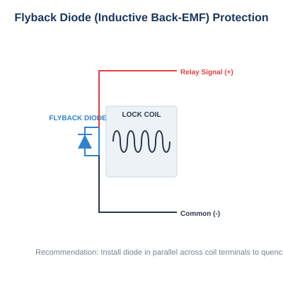
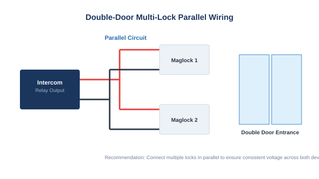
Relay Output for Multiple Locks
A single door station may need to control multiple locks simultaneously—for example, a double-door entrance where both leaves must unlock together, or a scenario where a pedestrian gate and a main door both need to release.
Parallel Wiring
If both locks share the same voltage and the total current is within the relay's rating, they can be wired in parallel. For example, a 3A relay can easily handle two 400mA maglocks (800mA total).
Relay Expansion Modules
If the current draw exceeds the relay rating or the locks require different voltages, a relay expansion module is used. The primary intercom relay triggers the module, which then switches multiple secondary circuits.
Common Troubleshooting Guide
Problem: Door unlocks randomly.
Cause: Interference or short circuits. Solution: Switch to shielded cable and check for water ingress.
Problem: Relay clicks but door stays locked.
Cause: Voltage drop or failed coil. Solution: Measure voltage at the lock during activation (should be ±10% of rating).
Problem: Unlock works at monitor but not mobile app.
Cause: Cloud authentication or network settings. Solution: Verify cloud control is enabled in the station configuration.
11. Multi-Station Intercalling
While most people think of intercoms primarily as visitor communication devices, many systems support internal station-to-station calling—the ability for one indoor monitor or handset to call another monitor within the same property. This internal communication capability is valuable for large homes, offices, facilities, and any environment where people in different locations need to communicate quickly without using mobile phones or walking to find each other.
What is Multi-Station Intercalling?
Multi-station intercalling is the ability for intercom stations within a property to call each other directly, independent of door stations. It creates an internal communication network similar to a telephone extension system, but using the intercom infrastructure.
Example scenarios:
Residential:
- • Master bedroom monitor calls kitchen monitor: "Dinner is ready, please come upstairs."
- • Living room monitor calls children's bedroom monitors: "Time to finish homework and get ready for bed."
- • Parents' room calls maid's quarters: "Could you help with something in the living room?"
Office:
- • Reception monitor calls manager's office monitor: "Your 3 PM appointment has arrived."
- • Conference room monitor calls IT department: "We need technical assistance with the projector."
- • Manager's office calls warehouse: "Is the shipment ready for pickup?"
Institutional:
- • Hospital nurse station calls patient rooms: "Mr. Chen, it's time for your medication."
- • School office calls classrooms: "Teacher, please send Sarah to the principal's office."
- • Security control room calls remote guard posts: "Check the perimeter near gate 3."
The key distinction: These are internal calls between indoor stations, not visitor calls from door stations.
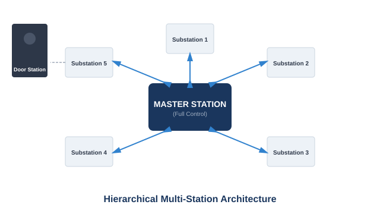
Master Stations vs. Substations
Multi-station intercom systems typically use a hierarchical structure:
Master Station (Control Station):
The master station has full calling privileges and enhanced features:
Capabilities:
- Call any substation: Can initiate calls to any other station in the system
- Call all stations (broadcast): Simultaneously call or page all substations
- Call groups: Call multiple specific stations (e.g., all bedroom monitors)
- Receive calls: Accept incoming calls from substations and door stations
- Override/monitor: Some systems allow masters to listen to substations without alerting them (controversial privacy feature, used in healthcare or security applications with proper disclosure)
Typical locations:
- • Parents' master bedroom (residential)
- • Reception desk or manager's office (commercial)
- • Nurse station or control room (institutional)
- • Security headquarters (facilities)
Physical characteristics:
- • Larger monitors with more buttons and controls
- • Touchscreen directory showing all stations
- • Physical buttons for frequently-called stations
- • More sophisticated audio (better speakers, noise cancellation)
Substation (Extension Station):
Substations have limited calling capabilities:
Capabilities:
- Call master station: Can always call designated master(s)
- Call door stations: Answer door calls when visitor presses button
- Limited or no substation-to-substation calling: Depending on system configuration, may or may not be able to call other substations directly
- Receive calls: Accept calls from master stations, door stations, and (if permitted) other substations
- Cannot broadcast: No ability to page all stations simultaneously
Typical locations:
- • Children's bedrooms, guest rooms (residential)
- • Individual offices, departments (commercial)
- • Patient rooms, waiting areas (institutional)
- • Remote guard posts, service areas (facilities)
Physical characteristics:
- • Standard monitors or handsets
- • Simplified button layout (answer, call master, door release)
- • May lack directory or have limited directory
Why this hierarchy?
Security & Control
Prevents unauthorized users (children, visitors, staff) from calling all stations indiscriminately. Only authorized personnel have master privileges.
Simplified Operation
Substations have fewer options, making them easier for untrained users. "Press this to call the front desk" is simpler than a 50-name directory.
Cost Optimization
Master stations are more expensive ($400-$800). Substations are less expensive ($200-$400). reserve masters for key points to save budget.
Calling Methods and User Interfaces
How users select which station to call varies by system sophistication:
Direct Station Buttons (Simple Systems):
Each station has dedicated physical buttons for calling specific other stations. Example: Small office with 4 stations. Reception monitor has 3 buttons labeled: "Manager," "Conference Room," "Warehouse". Manager monitor has 2 buttons: "Reception," "Conference Room". Conference room has buttons for Reception and Manager. Warehouse has button for Reception only. Pressing a button initiates call to that station.
Advantages: Simple: No directory navigation, no typing—just press labeled button; Fast: Single button press to call; Intuitive: Physical labels clearly indicate who you're calling.
Disadvantages: Limited scalability: Only practical for 3-10 stations (too many buttons becomes overwhelming); Fixed configuration: Adding station requires rewiring or reprogramming buttons; No flexibility: Can't call station that doesn't have a dedicated button.
Touchscreen Directory (Modern Systems):
Touchscreen monitors display scrollable list of all stations. User workflow: Touch "Intercom" button to access internal calling; Directory appears showing all available stations with names/labels; Scroll through list or search by name; Touch desired station name; Call initiates.
Advantages: Highly scalable: Supports hundreds of stations in directory; Flexible: Adding stations updates directory automatically (software-based); Searchable: Find station by typing first few letters of name; Visual: Can display photos or icons representing each station.
Disadvantages: Slower: Requires navigating menu (multiple touches vs. single button); Touchscreen dependency: If screen fails, internal calling may be unavailable; Learning curve: New users must learn menu navigation.
Numeric Station IDs (Traditional Systems):
Each station has a number (1-99 or 101-199). To call a station, enter its number on keypad. Example: Master bedroom = Station 1; Kitchen = Station 2; Children's room 1 = Station 3; Children's room 2 = Station 4. To call kitchen from master bedroom: Press "2" then "Call" button.
Advantages: Universal method: Works on any monitor regardless of screen capability; Scalable: Supports up to 99 stations with 2-digit IDs; Simple hardware: Just needs numeric keypad, no touchscreen.
Disadvantages: Must memorize numbers: Users need to remember station IDs or keep reference chart; Error-prone: Easy to dial wrong number (especially for infrequent users); Not intuitive: Station "14" doesn't tell you it's the warehouse.
Speed Dial / Favorites (Hybrid Approach):
Modern systems combine methods: touchscreen directory for all stations PLUS configurable speed-dial buttons for frequently-called locations. Example: 3 programmable buttons on monitor home screen labeled "Kitchen," "Reception," "Security"; Additional "More" button opens full directory for less-frequent calls. Best of both worlds: Fast access for common calls, full flexibility for occasional calls.
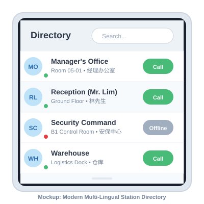
Calling Modes: Who Can Call Whom?
System configuration determines calling permissions:
Unrestricted Calling (All-to-All):
Any station can call any other station directly. Architecture: Full mesh communication—every station is equal, no restrictions. When appropriate: Small offices where all staff are peers (no hierarchy); Residential homes where all family members should communicate freely; Collaborative environments emphasizing open communication.
Advantages: Maximum flexibility: Anyone can reach anyone; No bottlenecks: Don't need to route through central station.
Disadvantages: Potential misuse: Children calling each other at night, staff making personal calls during work; Privacy concerns: Anyone can call into any room; No access control: Cannot restrict certain areas.
Master-Substation Only (Hub and Spoke):
Substations can only call master stations. Substations cannot call each other directly. Masters can call any station. Architecture: Star topology with master at center. When appropriate: Hospitals (patient rooms call nurse station, not other patient rooms); Hotels (guest rooms call front desk, not other guest rooms); Homes with children (kids can call parents' room, cannot call each other's rooms after bedtime); Secure facilities (remote stations call control room, not each other).
Advantages: Controlled communication: All calls route through authorized station; Privacy protection: Prevents unwanted calls between substations; Supervision: Masters can monitor and manage all internal communication; Security: Prevents coordination between unauthorized users.
Disadvantages: Master bottleneck: If master station fails, substation-to-substation communication impossible; Less efficient: Must route through master even for simple substation-to-substation needs.
Selective Calling (Group-Based Permissions):
Stations are organized into groups. Calling permissions defined by group membership. Example: Office building; Group 1 (Management): Manager's office, executive conference room, Can call: Any station in any group; Group 2 (Operations): Reception, customer service, sales floor, Can call: Any station in Group 2, can call Group 1 masters, cannot call Group 3; Group 3 (Secure Areas): IT server room, finance office, CEO office, Can call: Any station in Group 3, can call Group 1 masters, cannot call Group 2. This creates flexible permissions matching organizational structure and security requirements.
Advantages: Granular control: Precisely define who can communicate with whom; Scalable: Works for large organizations with complex hierarchies; Security: Restrict access to sensitive areas; Flexibility: Adjust permissions as organization changes.
Disadvantages: Configuration complexity: Requires careful planning and ongoing management; User confusion: "Why can't I call the warehouse?" (permissions not obvious to users); Administration overhead: Changes require updating group memberships.
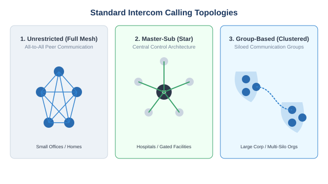
Group Calling (Calling Multiple Stations)
All-Call / Broadcast: Master station simultaneously pages all substations. How it works: Master presses "All Call" button; All substation monitors activate (speaker turns on, screen lights up); Master speaks, message broadcasts to all stations; Substations hear announcement but cannot respond (one-way broadcast). When used: Emergency announcements ("Fire alarm test in 5 minutes"); General notices ("Building closes in 30 minutes"); Family announcements ("Dinner is ready, everyone come downstairs"); Shift changes (factories paging all workers).
Group Call (Selected Multiple Stations): Call specific subset of stations simultaneously. Example: Manager wants to speak with all department heads. Presses "Department Heads" group call button. First-answer priority: All selected stations ring; First person to answer connects to master; Other stations stop ringing; Conversation is one-to-one (not conference call). When used: Reaching anyone from a group (don't care who answers, just need someone from that team); Urgent messages where multiple people should be available; On-call scenarios (call all on-duty staff, whoever answers responds).
Conference Call (Multiple Stations Connected Simultaneously): Advanced systems support true multi-party conferences where 3+ stations all hear each other. Example: Manager in office, warehouse supervisor, and loading dock staff all need to coordinate shipment. All three can speak and hear each other simultaneously. Requirements: Sophisticated audio mixing (combining multiple audio streams); Echo cancellation (preventing feedback loops); Higher bandwidth (multiple video streams if video conference). When used: Team coordination meetings; Emergency response (multiple responders coordinating); Complex problem-solving requiring input from multiple locations.
Selective Calling Systems (Analogue Reference)
For large facilities with dozens of stations, several specialized systems provide dedicated internal communication:
Aiphone TD-H Series (Example):
The Aiphone TD-H is a multi-channel selective call intercom designed for up to 25 handset stations. How it works: Each handset station has a unique ID number (1-25); To call another station: Pick up handset, dial station number (e.g., "07"), press call button; Called station rings, if they answer, two-way conversation established; Similar operation to office telephone extension system. Features: 25 handsets maximum on single system; Point-to-point calling: Any station can call any other station; Hands-free option: Handsets support speakerphone mode; Voice activation: Automatic voice-activated calling (speak when handset lifted, no button press needed); Call priority: Emergency stations can override non-emergency calls. Applications: Hospitals, Schools, Factories, Hotels. Advantages: Full intercom network without phone system infrastructure; No external calling (isolated from public phone network—more secure); Dedicated devices (always available, not dependent on mobile phones); Simple operation (works like traditional office phone extensions). Limitations: 25-station maximum (larger facilities need multiple systems or different solution); Proprietary (Aiphone handsets only, cannot mix brands); Older technology (not IP-based, though IP version "IX" series exists).
Cost: $200-$350 per handset, controller $800-$1,500, complete 10-handset system approximately $4,000-$6,000.
Aiphone LEF Series (Master-to-Multiple-Doors):
The Aiphone LEF series is designed for situations where a central master station needs to communicate with multiple remote door stations (up to 11 doors). How it works: Visitor presses button at any of the 11 door stations; Master station displays which door is calling (LED indicator or screen shows "Door 3"); Master answers, speaks with visitor, releases door if appropriate; Master can also call out to any door station proactively ("Door 5, please respond"). Applications: Large facilities with multiple entrances, Gated communities, Industrial sites. Cost: Master station $800-$1,500, door stations $250-$500 each, complete 5-door system approximately $3,500-$5,000.
Aiphone TC-M Series (Internal Communication Network):
The Aiphone TC-M is an internal telephone-type system supporting up to 2 master stations and 100 substations. System architecture: 2 master stations maximum; 100 substations maximum; Substations can only call masters; Masters can call any substation; Selective calling via station numbers. Applications: Large office buildings, Hospitals, Schools, Hotels. When TC-M is appropriate: Large facilities where central control/reception needs to reach many remote locations, but remote locations only need to call central control (not each other). Cost: Master station $600-$900, substations $150-$300 each, controller for 50-station system approximately $3,000-$4,000.
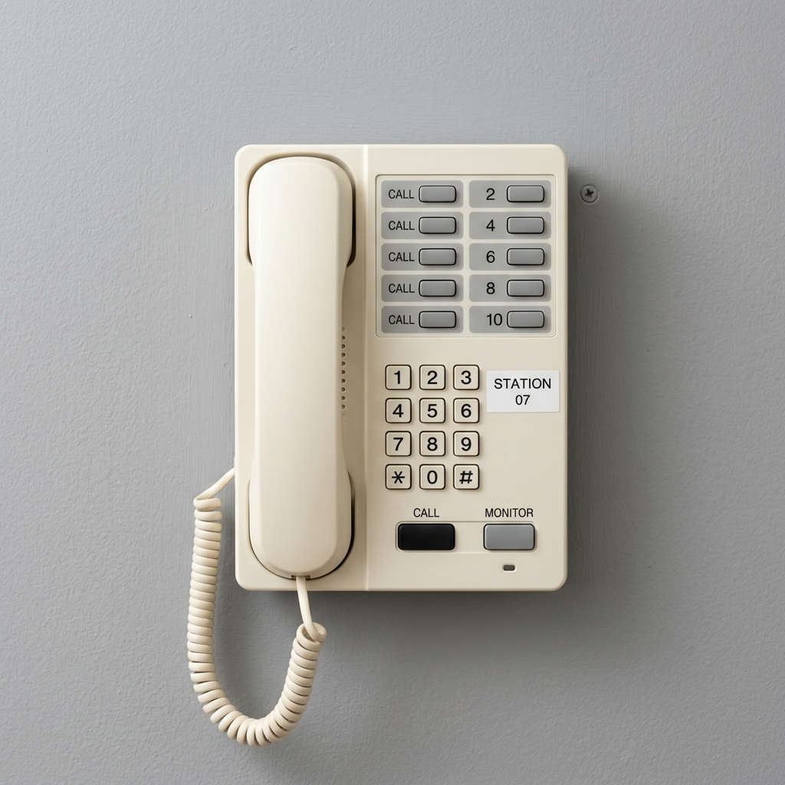
IP Intercoms and Network-Based Intercalling
Modern IP intercom systems bring sophisticated intercalling to accessible price points. All monitors are SIP devices on the network. Intercalling is simply SIP calls between monitors (same protocol used for visitor calls): User workflow: User selects "Intercom" on touchscreen; Directory of all stations appears (pulled from cloud database or local server); User selects station to call; Monitor sends SIP INVITE packet to target station's IP address; Target station rings, if answered, audio/video stream establishes (peer-to-peer or through SIP server).
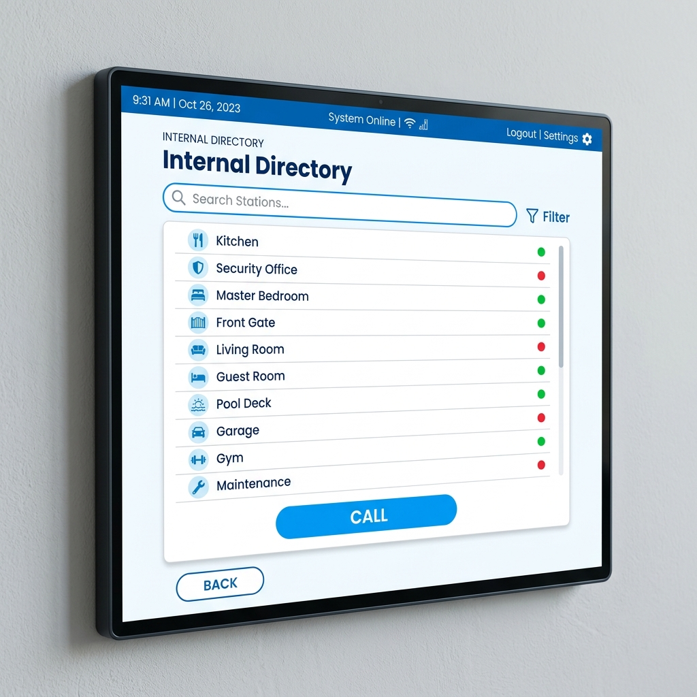
Advantages over traditional analogue intercalling:
- Unlimited capacity: No hard limits on number of stations. Hundreds or thousands of monitors can be part of intercall network.
- Dynamic directory: Add new station, it automatically appears in everyone's directory. Remove station, it disappears. No reprogramming.
- Advanced routing: Call forwarding (calls to desk monitor forward to mobile app if desk monitor doesn't answer); Do-not-disturb mode (station doesn't ring during scheduled quiet hours); Presence indicators (busy, available, away status shown in directory); Call transfer (answer call, realize wrong person, transfer to correct station).
- Geographic independence: Stations can be in same building or across the world. IP network connects them seamlessly.
- Multi-modal: Same directory includes desk monitors, mobile apps, IP desk phones (if integrated). Call "John in Marketing" reaches him whether he's at desk monitor, on mobile app, or at desk phone.
- Programmable: Intercalling rules, permissions, groups all configured via software interface (web portal). Changes take effect immediately without touching hardware.
Practical Applications of Intercalling
Residential Homes (Large Properties):
Scenario: Two-story house, 5 bedrooms, home office, kitchen, living room. Common intercalling uses: Morning routine: Master bedroom calls kitchen: "Is breakfast ready? We're coming down in 5 minutes."; After-school: Parent working in home office calls children's rooms: "Homework time. I'll check your progress in 30 minutes."; Before bed: Master bedroom calls all children's rooms (group call): "Lights out in 10 minutes. Finish brushing teeth and get into bed."; Household management: Kitchen calls maid's room: "Could you help bring groceries upstairs?". Replaces: Walking through house, shouting between floors, using mobile phones for internal communication.
Offices (Multiple Departments):
Scenario: 3-story office building, 40 staff, 10 departments. Common intercalling uses: Visitor management: Reception calls Sales: "Your 2 PM client has arrived."; Internal coordination: Operations calls Warehouse: "Is the shipment ready for pickup?". Warehouse: "Yes, prepared and staged at loading dock 2."; Meeting coordination: Executive Office calls Conference Room A: "Is the room set up for the board meeting?". Conference Room: "Yes, projector tested, water and folders on table."; IT support: Marketing calls IT: "Printer on level 2 is jammed. Can someone help?". IT: "I'll send someone up in 5 minutes.". Replaces: Walking between floors, phone extensions (using same devices for intercom and visitor management).
Schools (Large Campuses):
Scenario: Primary school, 30 classrooms, admin building, gym, cafeteria. Common intercalling uses: Student summons: Principal calls Classroom 3B: "Teacher, please send Alex to the principal's office."; Facility coordination: Gym calls Maintenance: "Heating isn't working in the gym. Students are cold during PE class."; Emergency communication: Security calls all classrooms (all-call): "Lockdown drill will begin in 2 minutes. Teachers, please prepare your classes."; Daily operations: Cafeteria calls classrooms sequentially (selective group calling): "Grade 1 classes, lunch is ready. Please bring your students to the cafeteria.". Replaces: Walking across campus, PA announcements, mobile phones.
Hospitals (Patient Communication):
Scenario: Hospital ward, 40 patient beds, 2 nurse stations, pharmacy. Common intercalling uses: Patient calls: Patient in Room 312 presses bedside call button, rings Nurse Station A. Nurse answers via intercom: "Mrs. Lee, how can I help you?". Patient: "I need assistance getting to the bathroom.". Nurse: "I'll be right there."; Staff coordination: Nurse Station A calls Pharmacy: "Patient in Room 305 needs pain medication. Can you prepare it?". Pharmacy: "Yes, I'll send it up with the next delivery in 10 minutes."; Doctor rounds: Doctor's office calls Nurse Station B: "I'm ready to do rounds. Which patients should I see first?". Nurse: "Start with Rooms 320 and 324—both requested to speak with you.". Replaces: Nurse call systems, walking to each room, loud PA announcements.
Privacy, Etiquette & Costs:
Finally, multi-station setups must account for the human elements of communication.
Monitoring Ethics: Master stations in some systems can selectively "listen" to substations without ringing the station first. While legitimate for childcare or healthcare, this capability constitutes a privacy violation in many other contexts. Engineering best practice (and PDPA compliance) mandates disabling this feature except where essential, and always ensuring stations have visual indicators (LEDs) when their microphone is active.
Do-Not-Disturb (DND): Essential for bedrooms and meeting rooms to prevent intercalls during quiet hours or focused work. Systems should allow users to easily enable/disable internal ringing, with emergency overrides configured only for fire or security alerts.
Communication Etiquette: Direct intercalling is intrusive. Establish guidelines for use (e.g., "Use intercom for urgent house coordination; use mobile phone for social chatting"). Replaces the shouting through hallways that often occurs in larger Singapore multi-generational homes.
Cost Breakdown: 4-Station Residential System
| Component | Standard System (No Intercall) | Intercall-Enabled System |
|---|---|---|
| Door Station | $600 | $600 |
| Master Monitor | $400 | $500 |
| 3 Substations | $1,050 ($350 each) | $1,200 ($400 each) |
| Controller / Integration | $200 | $400 |
| Installation & Wiring | $600 | $700 |
| Total System Cost | $2,850 | $3,400 |
Incremental cost for intercalling: $550 (19% increase in total budget)
Transforming Property Communication
Multi-station intercalling transforms intercom systems from simple visitor communication devices into comprehensive internal communication networks. For large homes, multi-room offices, facilities with staff distributed across many locations, the ability to quickly reach anyone at their station without mobile phones or walking significantly improves efficiency and convenience. Understanding the different calling architectures (all-to-all, master-substation, group-based), system capacities (from 4 stations to 100+ stations), and user interface options allows you to design intercalling functionality that matches your operational needs and budget.
12. Wiring & Connectivity
The physical and wireless connections between intercom components fundamentally determine system reliability, installation complexity, cost, and long-term performance. Understanding wiring options—from simple 2-wire audio cables to advanced PoE networks and wireless alternatives—is essential for proper system design and successful implementation.
2-Wire Systems (Audio-Only)
The simplest intercom wiring uses just two conductors to carry both audio signals and power between the door station and indoor monitors.
What travels on the 2 wires:
- Audio signal: Varying voltage representing voice (typically 1-5V AC superimposed on DC power)
- DC power: Constant voltage (12-24V DC) powering both door station and indoor handset
Both signals share the same wire pair, separated by frequency—DC power is constant (0 Hz), audio is alternating (300-3,400 Hz speech frequencies). Simple filtering circuits in each device separate the two signals.
Cable specifications:
- Wire type: Twisted pair (two insulated copper wires twisted together)
- Gauge: Typically 22-18 AWG (0.3-1.0 mm²)
- Insulation: PVC or PE jacket
- Shielding: Usually unshielded (UTP - Unshielded Twisted Pair) for cost savings
- Examples: Telephone cable, doorbell wire, dedicated 2-core intercom cable
Maximum distance & Audio quality:
- • 0-100 meters: Excellent audio quality
- • 100-200 meters: Good quality, slight volume reduction
- • 200-300 meters: Acceptable quality, noticeable volume loss, may need amplification
- • 300+ meters: Poor quality, significant degradation, amplifier or signal booster required
Distance limits depend on wire gauge (thicker wire = less resistance = longer distances) and number of stations (more stations = more signal split = reduced range).
Advantages:
- Simplicity: Only two wires to connect—positive and negative (or COM and audio)
- Low cost: 2-wire cable is inexpensive ($0.20-$0.50 per meter)
- Easy retrofitting: Can often use existing telephone wiring or doorbell wiring in older buildings
- Proven reliability: Minimal components, less to fail
- No network knowledge: Simple electrical connections, any electrician can install
Disadvantages:
- • Audio-only: Cannot carry video signals (insufficient bandwidth)
- • Limited features: No advanced features like video, mobile integration, remote access
- • Shared power/audio: Electrical noise can interfere with audio quality
- • Scalability limits: Adding stations splits signal power, reducing quality
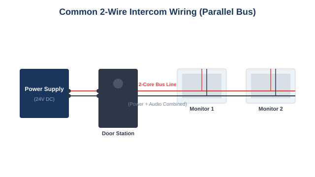
Typical applications:
Budget-conscious residential audio intercoms, Simple gate communication (voice sufficient), Retrofit installations using existing 2-wire cabling, Temporary installations, Emergency call points (handicap toilets, car parks).
4-Wire Systems (Audio + Video Analogue)
Traditional analogue video intercoms require additional wiring beyond the 2-wire audio configuration to carry video signals.
What travels on the 4 wires (Common Approaches):
Bundled Cable
Wire 1-2: Audio; Wire 3-4: Power. Video travels on a separate coaxial cable.
2-Wire + Coax
2-wire: Combined audio and power; Coaxial cable: Video signal (separate cable).
Proprietary 4-Wire
Wire 1-2: Audio Tx/Rx; Wire 3-4: Power/Control. Video via multiplexing (rare).
Coaxial Cable for Video:
Typically RG59 (standard) or RG6 (longer distances). Supports runs up to 200-300 meters before significant signal loss occurs.
Maximum distances (Video):
- • 0-100m: Excellent image quality
- • 100-200m: Good quality
- • 200-300m: Acceptable (some noise)
- • 300m+: Poor quality, needs amplifier
Installation Complexity:
- • Larger cable bundles (thicker/less flexible)
- • Multiple terminations per point
- • BNC or F-type connectors required
- • Labor-intensive routing through walls/conduit
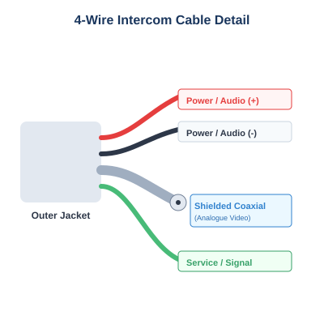
Advantages:
- Video capability: Provides visual verification of visitors
- Proven technology: Analogue video reliable and established
- No network required: Standalone system, no IT dependency
- Works offline: No internet needed
Disadvantages:
- • SD only: Limited to 420-480 TVL video quality
- • Complex wiring: Multiple cable types and more terminations
- • Signal loss: Video degrades over long runs
- • Difficult expansion: Requires running new cable bundles
CAT6 Ethernet Cable (IP Intercom Systems)
Modern IP intercoms use standard network cabling—the same cable that connects computers, printers, and IP cameras.
CAT6 Cable Structure:
- 8 conductors in 4 twisted pairs
- Different twist rates to minimize crosstalk
- PVC, Plenum, or UV-rated jackets available
What travels on CAT6:
- Data: Digital packets for HD/4K video and audio
- Power: Delivered via PoE (802.3af/at/bt)
Maximum Distance:
100 Meter Hard Limit
Ethernet standards define a 100m segment limit. Beyond this, connection becomes unreliable with packet loss and drops.
To extend beyond 100m: use switches, PoE extenders, or fiber optic media converters.

Advantages:
- Single cable: Carries data, samples, and power
- High bandwidth: Supports HD/4K video streams
- Scalable: Plug into network and add devices easily
- Professional: Clean, organized cabling infrastructure
- Future-proof: Supports emerging technologies
Disadvantages:
- • Needs IP Infra: Requires PoE switches and configuration
- • Distance limit: Hard 100m segment limit
- • Higher cost: CAT6 and PoE gear more expensive
- • IT knowledge: Requires some network understanding
Power over Ethernet (PoE) Specifications
Understanding PoE standards helps ensure devices receive adequate power for all features.
| Standard | Supply Power | Available Power | Typical Application |
|---|---|---|---|
| 802.3af (PoE) | 15.4W | 12.95W | Basic IP Door Stations, monitors |
| 802.3at (PoE+) | 30W | 25.5W | Advanced stations (IR, Card Readers) |
| 802.3bt (PoE++) | 60-90W | 51-71W | High-power PTZ cameras, large displays |
Power Budget Planning:
Total power budget = (Sum of device power requirements) + 20% safety margin. Ensure your PoE switch can handle the simultaneous peak consumption of all connected intercom stations.
Wireless Connectivity (WiFi, RF, Cellular)
Wireless intercoms eliminate cable runs, simplifying retrofit installations but introducing reliability considerations.
WiFi (802.11 Wireless):
Door station and monitors connect to property router. Needs strong WiFi signal (outdoor challenges) and stable network bandwidth (1-4 Mbps/stream for HD).
Advantages:
- No cable runs (save labor)
- Fast installation
- Flexible monitor placement
Disadvantages:
- Reliability (WiFi drops/interference)
- Bandwidth congestion
- Security (interception possible)
- Range limits (30-50m through walls)
Cellular (4G/5G) Intercoms:
Perfect for remote gates, rural properties, or construction sites with no infrastructure. Door station has a SIM card and calls via mobile network.
- Advantages: True wireless, works anywhere with cell signal, professionally maintained uptime.
- Disadvantages: Monthly data plan costs ($5-$20), signal dependent, higher latency (200-500ms).
Network Topology & Architecture
Point-to-Point
Direct wire between one door and one monitor. No controller, no network. Absolute minimum system.
Star Topology
Home-run cables from every device back to a central controller. Common for analogue systems.
Daisy Chain (Series)
Devices connect one to the next. Reduced cable length but upstream failure kills downstream.
Switched Ethernet
IP infrastructure with switches. Highly scalable and redundant. Standard IT best practices.
Installation Best Practices & Troubleshooting
Quick Troubleshooting Guide
Problem: No power at door station (IP). Check PoE budget, verify cable length <100m, test termination plugs.
Problem: Video signal exists but poor quality (Analogue). Check for AC power interference, verify 75-ohm coax impedance, check grounding.
Problem: Audio hum/buzz (Analogue). Usually a ground loop. Isolate grounds or add an isolation transformer.
Problem: Intermittent connection (IP). Check for crosstalk/cable quality, update station firmware, monitor network congestion.
13. Door Stations Explained
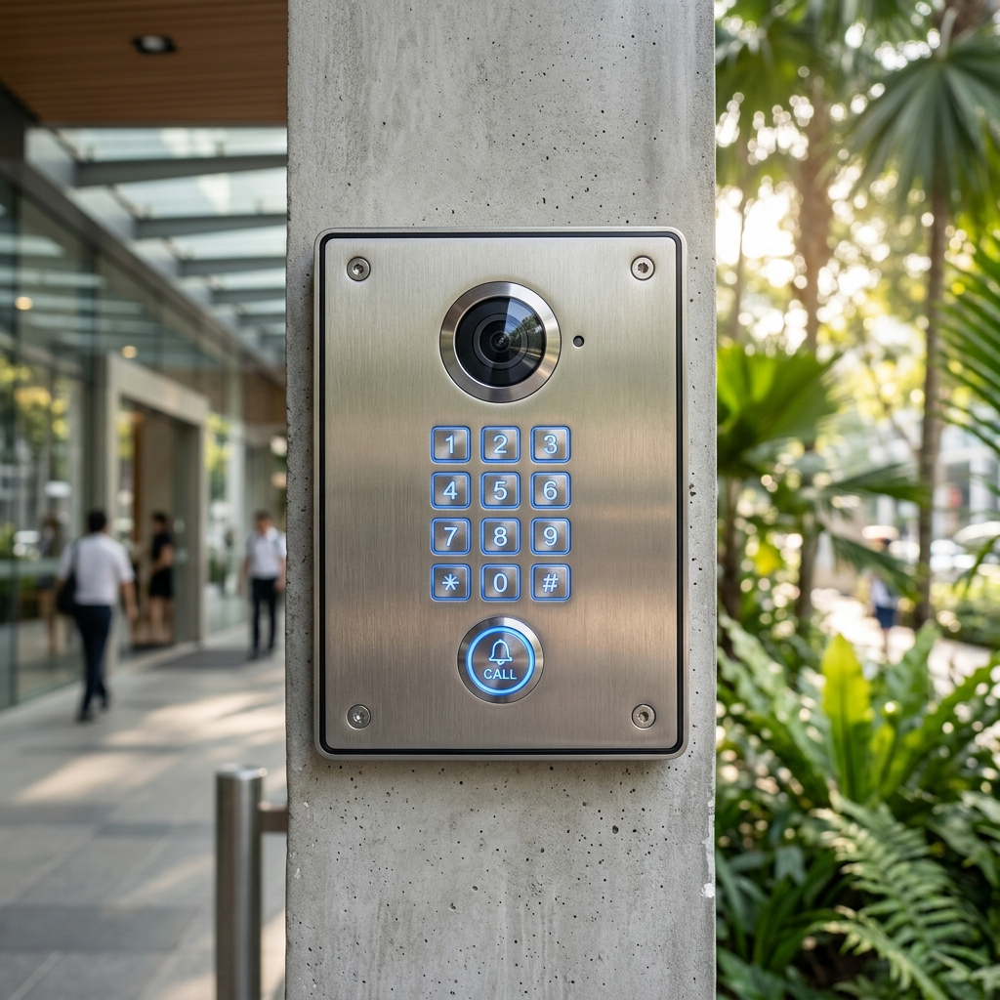
The door station (or entry panel) is the "face" of your intercom system. Located at entry points, it is the primary interface for visitors and must withstand environmental challenges while providing clear communication and secure access control.
A standard door station consists of several critical elements—camera, microphone, speaker, and calling interface—working together to provide a seamless visitor vetting experience.
Core Components
1. Call Button & Interface:
- Single Button: Best for single-family homes or dedicated entrances.
- Keypad: Allows direct apartment dialing and PIN code entry.
- Digital Directory (Touchscreen): Scrollable list for large condominiums or office buildings.
2. Camera Module (Video Stations):
- Resolution: SD (analogue) to 4K (IP). 1080p is the modern standard.
- Field of View (FoV): Wide-angle (110°-180°) ensures you see the visitor's face and surroundings.
- Low-Light Performance: IR cut filters and built-in LEDs for night vision.
3. Audio System:
- Microphone: Omnidirectional, often with noise-cancellation.
- Speaker: High-output with adjustable volume.
- Acoustic Protection: Waterproof mesh to prevent moisture ingress.
4. Status Indicators:
Visual symbols (Bell, Speech, Lock) or voice prompts ("Calling," "Talk," "Door is Open") to guide visitors, essential for accessibility compliance.
Advanced Entry Features
Modern panels integrate additional authentication and utility features.
RFID / NFC
Tap access cards or mobile phones for authorized entry.
Facial Recognition
AI-powered hands-free entry for residents and staff.
Tamper Protection
Physical sensors trigger alarms if the unit is pried off the wall.
Environmental Durability & Construction
Outdoor stations must survive Singapore's intense heat, humidity, and rain. The housing and electronic components must be specified for tropical performance.
IP Ratings (Water & Dust):
- IP54: Standard protection (splashes).
- IP65: Dust-tight and protected against water jets.
- IP66/67: Enhanced protection for exposed coastal sites.
IK Ratings (Vandalism):
- IK07: Standard plastic/aluminum.
- IK08-IK10: High-impact resistance (Stainless Steel 316L).
Mounting & Positioning Guidelines
Standard Height:
Optimal mounting height is **1.4m to 1.6m** from the ground to the camera lens. This ensures a clear view of both adults and children while maintaining ergonomics for button/keypad use.
Lighting Strategy:
Avoid placing the camera directly facing the sun or bright streetlights. Modern sensors with **WDR (Wide Dynamic Range)** help balance shadows and highlights in high-contrast tropical lighting.
Selection Checklist:
- ✅ Visibility: Is the visitor clearly identifiable in both day and night?
- ✅ Durability: Is the material suited for the level of exposure (Salt air / Vandalism)?
- ✅ Integrity: Does it have a relay for door control and tamper protection?
- ✅ Capacity: Does the directory/keypad match the number of residents/users?
14. Indoor Stations Explained
The indoor station (or monitor) is how you interact with the system from inside your property. It provides audio/video communication, remote door release, and often serves as a central hub for security and system management.
Types of Indoor Stations
The choice of monitor depends on user preference, space constraints, and required features.
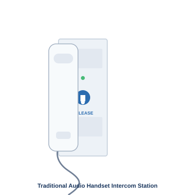
1. Handset Stations (Audio Only)
Traditional "telephone" style units. Pick up a handset to talk. Best for budget-conscious audio setups or privacy-focused bedroom points.
- Tactile Buttons: Physically distinguishable buttons for call/door release.
- Privacy: Sound is isolated to the ear.
- Ease of Use: Extremely intuitive for elderly users.
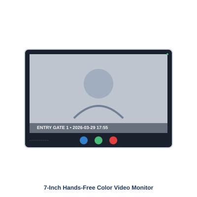
2. Video Monitors (Hands-Free)
Modern tablet-style units with built-in speakers/mics. The most common choice for new residential and commercial buildings across Singapore.
- Screen Sizes: Typically 4", 7", or 10" colour LCDs.
- Convenience: Just tap a button to answer; no handset needed.
- Slim Profile: Low-profile wall mounting for modern interiors.
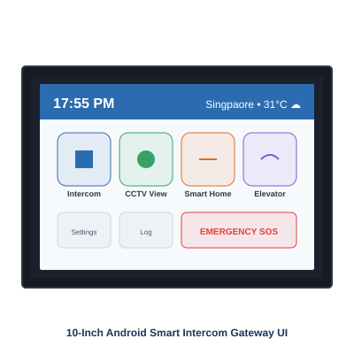
3. IP Smart Monitors & Mobile Apps
Android or Linux-based touchscreen monitors that connect to the property network and cloud platforms, enabling global accessibility.
- Multitasking: View CCTV, control smart home, and manage intercom from one screen.
- Cloud Connectivity: Answer calls via smartphone app even when not at home.
- Digital Directory: Easy multi-station intercalling.
Key Technical Specifications
| Feature | Standard Specs | Premium Specs |
|---|---|---|
| Screen Resolution | 800x480 (WVGA) | 1280x800 (HD) or higher |
| Audio Quality | Basic Echo Cancellation | Full Duplex, Dual Mic Array, Beamforming |
| Internal Storage | None (Snapshot only) | SD Card Slot / Internal Flash (Video recording) |
| Interface | Physical Buttons | Capacitive Touchscreen |
System Integration Capabilities
Modern indoor monitors act as a command center for property security.
CCTV Stream Integration
IP monitors can pull live feeds from ONVIF-compatible CCTV cameras. Check who's at the car park or pool from your intercom screen.
Smart Home Control (BMS)
Control lighting, air-conditioning, and curtains directly through the intercom monitor using protocols like RS485 or smart home app integration.
Power Requirements:
Monitors are typically powered via **12V DC transformers** or **PoE (Power over Ethernet)**. Check your cable infrastructure before selecting a model.
Placement Strategy:
Mount at **1.5m (eye level)** in high-traffic areas like the kitchen or living room entrance. Avoid mounting behind doors or in noisy laundry areas.
Architect's Recommendation:
"For Singaporean homes, we recommend a **7-inch IP Monitor** in the kitchen as the primary point. It offers the best balance of screen real estate for clear visitor identification and a slim physical footprint that fits within standard HDB/Condo utility layouts."
15. Master Stations vs Substations
In multi-station intercom systems, not all stations have equal capabilities. Understanding the hierarchy between master stations (control centers) and substations (remote endpoints) is essential for designing systems that balance functionality, security, and cost.
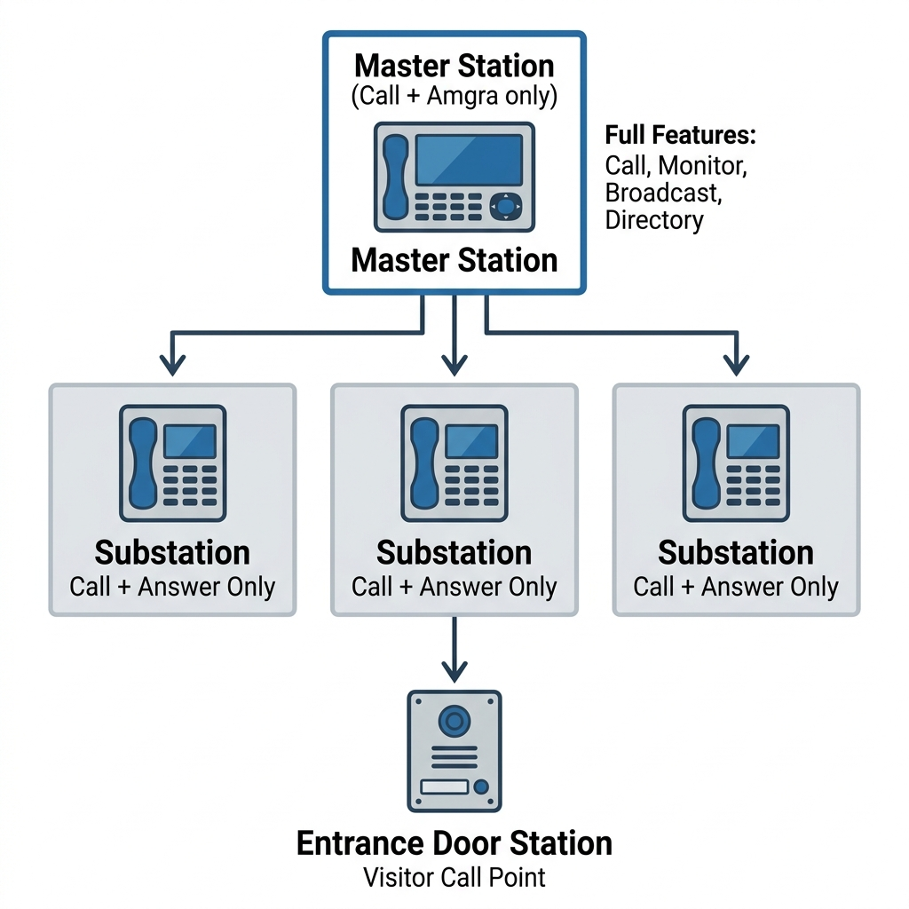
Defining the Hierarchy
Master Station (Command Center)
The master station is the primary control point with full system privileges and enhanced capabilities.
- Full calling authority: Call any station, initiate group calls, and broadcast to all.
- Enhanced control: System configuration, user management, and monitor/override capabilities.
- Superior hardware: Larger 7-10 inch screens, better audio, and event logging.
Typical Locations: Master bedrooms, reception desks, nurse stations, security control rooms.
Substation (Remote Endpoint)
Substations have limited privileges, primarily receiving calls and calling designated masters.
- Limited calling: Can call master stations and answer door calls, but rarely other substations.
- Basic control: Answer/reject calls, door release (if authorized), and volume adjustment.
- Standard hardware: Smaller screens or handsets, simplified button layouts.
Typical Locations: Guest rooms, individual offices, patient rooms, classrooms.
Permission Levels and Calling Restrictions
Managing how stations interact is critical for operational security and efficiency.
Master-Only Calling (Common)
Substations can only call designated masters, not other substations. This prevents unauthorized communication between restricted areas (e.g., patient rooms calling only the nurse station).
Group-Based Permissions
Stations organized into groups (Management, Ops, Secure) with defined rules. Software-defined in IP systems for granular organizational control.
Time-Based Permissions
Permissions can change based on the day. For example, classrooms can only call the office during school hours (8 AM - 3 PM); after hours, outbound calls are disabled for security.
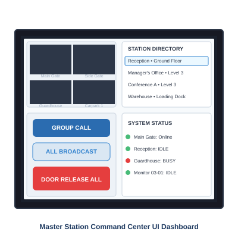
Advanced Master Station Features
In large-scale IP systems, master stations offer centralized oversight through specialized control interfaces.
- Directory & Search: Full searchable list of all stations by name or location.
- Group Calling: Broadcast announcements or call specific zones (e.g., "All Floor 3").
- Monitoring & Override: Priority calls can interrupt substation calls in emergencies.
- Call Logging: Detailed records of all calls, door releases, and system errors.
16. Home Intercom Systems
Residential intercom systems for landed properties, bungalows, and terrace houses serve dual purposes: vetting visitors at gates and facilitating internal communication within the home. Understanding residential-specific requirements helps homeowners select systems that enhance security, convenience, and family communication.
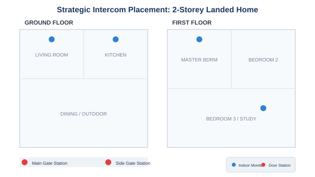
Primary Functions in Residential Properties
Residential systems serve dual purposes: vetting visitors at gates and facilitating internal room-to-room communication.
1. Gate Communication
Confirm identity and delivery uniforms before granting access, deterring potential intruders.
2. Internal Family Sync
Facilitate room-to-room calling for summoning, care, or domestic helper coordination.
Typical Residential Configurations
Small Home (Budget)
1 Gate Station + 1 Kitchen Monitor
Essential visitor vetting and gate release. Best for small 2-3 bedroom properties.
$900 - $1,500
Standard Home (Popular)
1 Gate + Kitchen + Living Room + Master
Multiple answer points and room-to-room calling. Best for families with children.
$1,800 - $3,000
Large Home (Premium)
2 Gates + 5-6 Monitors + Mobile App
Full property coverage and mobile control. For multi-generational tech-savvy homes.
$3,500 - $6,000
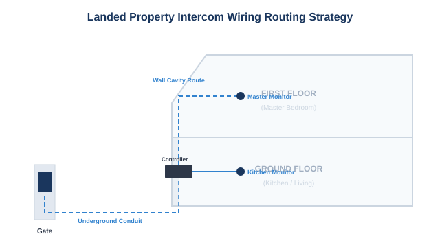
Placement & Installation Strategy
Optimal performance requires careful consideration of outdoor station height and indoor monitor accessibility.
Outdoor Mounting
Mount at 1.2-1.4m for vehicle pillars and standing eye-level for pedestrian gates.
Indoor Strategy
Kitchen (primary), Master Bedroom (secondary), avoiding direct sunlight and high humidity.
Integration & Smart Features
Gate Automation
Connect the intercom relay directly to your gate motor. One tap on the monitor unlocks the vehicle or pedestrian gate safely without bypassing IR sensors.
Smart Home Sync
Trigger porch lights when the bell is pressed, or use voice commands via Alexa/Google Home to view the gate on your smart displays.
Power & Backup:
In Singapore, a nighttime power trip or outage can leave your property vulnerable. We recommend a **600VA UPS** ($100-$200) to keep your network and intercom active for 2-4 hours, ensuring you can always vet visitors regardless of the mains status.
Common Mistake Checklist
- ❌ Kitchen monitor only: Missing calls while in the bedroom or upstairs.
- ❌ Auto-answer in bedroom: Private room audio broadcast to the visitor at the gate.
- ❌ Weak WiFi at gate: Leading to dropped calls and pixelated video.
- ❌ No backup power: Security gap during blackouts/trips.
- ❌ Monitor in sunlight: Screen being washed out and unusable.
- ❌ Forgetting side gates: Allowing unchecked entry to the property.
17. Choosing an Intercom for Your Home
Selecting the right intercom system for your home requires balancing security needs, budget constraints, lifestyle preferences, and technical requirements. This decision framework guides homeowners through the selection process systematically.
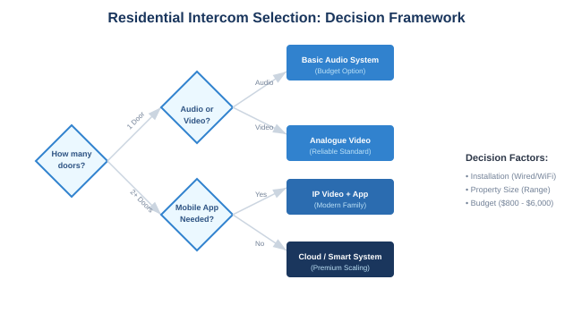
Decision Framework
Follow this systematic process to determine the ideal system tier based on your specific property requirements.
| Step | Question | Factor |
|---|---|---|
| 1 | How many doors? | Hardware Scale |
| 2 | How many monitors? | User Coverage |
| 3 | Mobile App? | IP vs Analogue |
Matching Systems to Requirements
Budget-Conscious Small Home
- Setup: 1 door station, 2 monitors (Kitchen/LR).
- Solution: Analogue Video (Aiphone JO series).
- Why: Meets core needs affordably with proven reliability.
- Cost: $1,500 - $2,200.
Modern Family Home
- Setup: 2 doors, 3 monitors + Mobile app.
- Solution: IP Cloud Intercom (Akuvox SmartPlus).
- Why: HD video, remote access for working parents.
- Cost: $3,500 - $4,500 (+ subscription).
Multi-Generational Estate
- Setup: 2 doors, 6 monitors (all rooms covered).
- Solution: Premium IP (Aiphone IX series).
- Why: Internal calling for elderly, dual card access.
- Cost: $6,500 - $9,000.
Retrofit Older Home
- Setup: Reuse old 2-wire cabling.
- Solution: 2-Wire Audio (Aiphone IE series/Kocom).
- Why: Simple operation for elderly, avoids re-wiring.
- Cost: $700 - $1,100.
Brand and Model Selection Criteria
Tier 1: Premium
Aiphone, 2N, Akuvox
Best-in-class build (metal), HD video, noise cancellation, and 10+ year lifecycle.
Tier 2: Mid-Range
Panasonic, Commax, Hikvision
Plastic housings, standard SD/HD, moderate features and 5-10 year lifecycle.
Tier 3: Budget
Kocom, Generic brands
Core functionality, plastic build, basic audio/SD, 3-7 year lifecycle.
Feature Checklist - Must-Have vs. Nice-to-Have
Essential (Must-Have)
- Two-way audio & Door release
- Weather resistance (IP65 min)
- Night vision (for video systems)
- Audible ring & Volume control
Highly Recommended
- HD Video (720p or 1080p)
- Multiple monitor support
- Call snapshots history
- Mobile app remote access
Avoid Overpaying For
- 4K video (intercom bandwidth overkill)
- Excessive monitor counts
- Unused smart software integrations
Cabling & Infrastructure Planning
New Construction: Always run **CAT6** to all planned locations, even for analogue. It future-proofs the home for IP upgrades. Prewiring cost: $800-$1,500.
Retrofits: For finished homes, we offer surface conduit solutions (painted to match walls), repurposing existing 2-wire telephone cables for audio, or installing wireless WiFi systems if wiring is impossible.
Final Acceptance Checklist
- ✓ Communication: Audio clear, no static or echo?
- ✓ Video: Face captures clearly with night IR?
- ✓ Release: Gate unlocks within 1-2 seconds?
- ✓ App: Push notifications received on mobile?
- ✓ Ringing: All monitors audibly ring?
- ✓ Documentation: Manual and warranty received?
- ✓ Positioning: Camera angle optimized?
- ✓ Protection: Cables concealed and protected?
18. Indoor Monitor Placement
The physical location of indoor monitors significantly impacts system usability, convenience, and user satisfaction. Strategic placement ensures calls are answered promptly, communication is clear, and the system integrates naturally into daily life.
General Placement Principles
Accessibility & Visibility
Mount at a comfortable height (1.4-1.5m standing). Ensure clear sightlines—never hide monitors behind furniture or door swings where they can't be seen.
Height & Ergonomics
Optimize for your users. Wheelchair accessibility requires a lower 1.0-1.2m mount. Consider a slight 5-10° downward tilt to reduce ceiling glare.
Environmental Factors
Avoid direct sunlight (glare), moisture (sinks/bathrooms), and electromagnetic interference (don't mount directly next to microwaves).
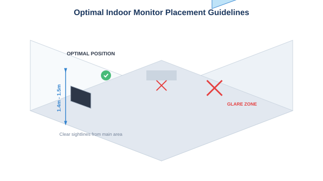
Room-by-Room Placement Guide
Kitchen - Primary Station
The most critical location. Position near the main entrance where it's visible from prep areas. Always use hands-free monitors here to allow answering while cooking or doing dishes. Avoid "splatter zones" near sinks or stoves.
Living Room - Secondary Station
Mount at 1.4m eye-level near the entry, visible from main sofa seating. Ensure volume is sufficient to overcome TV or ambient conversation. Do not place on the same wall as the TV to avoid focal point conflict.
Master Bedroom - Privacy Station
Best placed on the side wall near the bed for easy reach. Avoid facing the bed directly to prevent light disruption at night. Handset-capable monitors are ideal here for conversation privacy.
Home Office - Workflow Station
Mount at 1.2-1.3m (seated eye level) next to the desk. Ensure it is out of the webcam frame for professional Zoom/Teams calls. Set to quiet ring or flash mode to minimize meeting disruption.
Avoid These Locations:
Multi-Monitor Coordination & Etiquette
Ringing Strategies
To prevent confusion, we recommend **Priority Ringing** (Kitchen rings immediately, others ring after 2-4 seconds) or **Zone-Based Ringing** (Bedroom only rings at night; common areas only during the day).
System Etiquette
Always announce yourself ("Dad calling from office"), keep calls brief for quick messages, and strictly respect Do Not Disturb (DND) modes during rest hours.
Placement Testing:
Before drilling, rest the monitor at the proposed location and perform a "Family Sightline Test". Have everyone (children, elderly, tall/short) verify they can see and reach it comfortably from typical standing or sitting positions.
19. Single-Door vs Multi-Door Properties
The number of entry points requiring intercom coverage significantly affects system selection, configuration, and cost. Understanding single-door and multi-door requirements ensures your intercom system covers all access points appropriately.
Single-Door Properties - Most Common
This is the standard configuration for 70% of landed properties in Singapore, where a single main gate serves both vehicles and pedestrians.
Budget (Audio)
1 door station + 2 handsets. Ideal for simple terrace homes.
$500 - $900
Standard (Video)
1 video door station + 2 monitors. Most popular choice.
$1,200 - $2,200
Premium (IP)
1 IP station + 2 monitors + mobile app control.
$2,000 - $3,500
Advantages of Single-Door Systems:
- Lower Cost: One station/one cable run reduces equipment and labor costs significantly.
- Simpler Operation: No confusion for elderly users about which door is ringing.
- Reliability: Fewer failure points and simpler troubleshooting over time.
Multi-Door Properties - Comprehensive Coverage
Common scenarios for multi-door setups include properties with main vehicle gates plus pedestrian side gates (25% of properties), or large estates with back service entrances and separate front doors.
Identifying the Calling Door
Occupants must know which door is ringing before answering. We implement three layers of identification:
- • Visual: On-screen labels like "Main Gate" or "Side Gate".
- • Audible: Distinct ringtones (Ding-Dong vs. Beep-Beep).
- • LEDs: Colour-coded indicators for specific gates.
Selective Door Release
Unlocking the wrong door is a major security risk. Premium systems use dedicated physical buttons or context-aware touchscreen buttons that clearly indicate which door will be opened.
PRO TIP: Always test that pressing 'Unlock' on a Main Gate call does NOT simultaneously open the Side Gate.
Configuration Cost Analysis (Multi-Door)
| Configuration | Hardware Details | Estimated Total |
|---|---|---|
| Two-Door (Standard) | 1 Video + 1 Audio + 2 Monitors | $2,200 - $2,800 |
| Two-Door (Premium) | 2 Video + 3 Monitors | $3,550 - $4,500 |
| Three-Door (Hybrid) | 1 Video + 2 Audio + 3 Monitors | $3,050 - $3,800 |
| Three-Door (Premium) | 3 Video + 4 Monitors + Controller | $5,550 - $7,000 |
Common Multi-Door Mistakes:
- Buying a single-door-only controller for a multi-gate property.
- Unclear identification leading to unlocking the wrong gate.
- Forgetting an intercom at the side gate because "family uses cards".
- Insufficient monitors to cover all calling points across floors.
Special Case: Gated Communities
For homes in managed compounds, usually one intercom at the property gate is sufficient since the guardhouse handles pre-screening. A second intercom at the front door is maximum security but often feels redundant for daily use.
Decision Framework:
Minimum: Intercom at primary visitor entrance only (80% of traffic).
Recommended: Intercom at primary gate + any secondary entrance used by couriers/deliveries.
Maximum: Intercom at every possible entry point for comprehensive estate security.
20. Audio-Only vs Video for Homes
While video intercoms have become the modern standard, audio-only systems remain viable for specific residential applications. Understanding when each technology is appropriate helps homeowners make informed, cost-effective decisions aligned with their security requirements and budget constraints.
Detailed Audio-Only Analysis
What Audio-Only Provides:
- Two-way voice communication and remote door release.
- Multiple indoor station support (Handsets).
- Lower hardware and installation costs (55-65% reduction).
- Simple, telephone-familiar operation for elderly users.
What it does NOT provide:
- Visual verification of visitor identity or uniforms.
- Recorded evidence of callers (No snapshots or logs).
- Mobile app support or smart home integration.
- Night vision or any visual-based security detection.
When Audio-Only Makes Sense
1. Retrofits (Existing 2-Wire)
Ideal for older properties where running new CAT6 or 4-wire cables would require messy demolition. Audio systems can often reuse existing doorbell wiring seamlessly.
2. Gated Communities
If a community guardhouse already provides visual screening at the perimeter, a property-level audio system is often a sufficient secondary check.
3. Privacy-Conscious Households
For users wanting to avoid PDPA data collection obligations or potential hacking risks associated with video storage, audio-only is a "surveillance-free" security choice.
4. Elderly Family Members
The traditional telephone-style handset is more familiar and easier to use than touchscreen menus for some seniors.
When Video is Clearly Superior
Unknown & High-Risk Visitors
Visual verification is essential for homes on main roads or those receiving frequent deliveries. You can verify uniforms, courier ID badges, and confirm if a visitor is alone before opening the gate.
For high-value properties, video provides a critical deterrent and captures timestamped evidence in case of disputes or security incidents.
Modern Standards & Smart Home
Market expectations in 2026 demand video for new builds. It adds significant resale value and allows integration with smartphone apps, Alexa/Google Home, and NVR recording systems.
Cost-Value Question: Is visual peace of mind worth ~$10/month over a 10-year lifespan? For 90% of our clients, the answer is a resounding 'Yes'.
Decision Matrix - Which should you choose?
Choose AUDIO-ONLY if:
- Total system budget is strictly under $1,200.
- Cabling for video is structuraly impossible/expensive.
- Guardhouse handles all primary visitor vetting.
- Zero-surveillance privacy is a top priority.
Choose VIDEO if:
- New construction or full renovation is underway.
- Home receives frequent parcel/online deliveries.
- You want remote access via your smartphone.
- Property value warrants modern security standards.
Market Reality (2026 Trends)
In 2026, **95% of new installations** in Singapore are video-based. The price gap has narrowed significantly—while video once commanded a 275% premium, it is now only ~125% more expensive than basic audio. Unless you have specific wiring or user preference constraints, video is the recommended investment for future-proofing your home security.
21. Apartment & Condominium Intercom Systems
Multi-unit residential buildings—condominiums, apartments, HDB flats—have fundamentally different intercom requirements than landed properties. These systems must handle hundreds or thousands of units, manage visitor directories, integrate with building security, and provide scalable, centrally-managed communication infrastructure.
Fundamental Differences from Residential Systems
Scale and Complexity
Landed property systems are simple and self-contained (1-4 door stations, 1-6 monitors). Condominium systems are complex, centrally managed infrastructures with 1-10 entrance panels and 50-5,000 unit indoor stations serving individual residents under a building-wide management (MCST).
Visitor Call Flow
Condo systems require a visitor directory (hundreds of units listed) and selective calling. Visitors arrive at a lobby entrance panel, search for a name or unit number, and call a specific unit rather than ringing the entire property simultaneously.
Ownership and Management
In a condominium, the Management Corporation Strata Title (MCST) owns the building-wide infrastructure. Residents are users, not owners, and typically inherit a standardized system selected by the developer or MCST. Individual units cannot change the system, though they may be responsible for in-unit monitor replacements.
Condominium Intercom Architecture
Condo systems are built on building-wide IP networks, connecting multiple entry points to a secure central management server and hundreds of individual unit monitors.
- 🔹 Entry Points: Lobby panels, carpark entries, amenity areas.
- 🔹 Central Hub: Management server/cloud platform for routing and logs.
- 🔹 User Endpoints: In-unit monitors, handsets, and mobile apps.
Visitor Directory and Calling Process
The Calling Experience
Visitors interact with a touchscreen interface where they can search by name or enter a unit number. Once a call is initiated, the specific unit monitor rings, providing the resident with live video and audio. Access is granted with a single tap, releasing the lobby door for a set duration (typically 5-10 seconds).
Privacy Considerations
Directory displays balance searchability with privacy. Options range from full names for easy searching to unit-number-only displays for maximum privacy. Many systems allow residents to choose whether their full name, initials, or no name appears.
Access Control Integration
Dual-Function Panels
Modern entrance panels serve as both visitor call stations and resident access points. Residents tap an RFID card (MIFARE Classic or DESFire) or use NFC/BLE mobile credentials to enter without calling.
Unified Management
Management enjoys a single database for residents, access cards, and intercom calling. This provides a unified audit trail of who entered when, whether via card swipe or intercom authorization.
Common Condominium System Types
Traditional (Analogue)
Proprietary wiring, standard definition video (grainy). Found in older condos (1990s-2000s). No remote app access.
Modern (IP Network)
HD video (720p/1080p), CAT6 cabling, PoE powered. Smartphone app support for answering calls anywhere.
Smart (Cloud-Based)
Minimal hardware, mobile-first experience. Features virtual keys, QR code access, and cloud events storage.
Special Condominium Features
Delivery Access
MCST can generate time-limited PINs or QR codes for couriers and cleaners, ensuring they can only access the building during specific windows.
Visitor Pre-Authorization
Residents can send digital "virtual keys" to guests via WhatsApp. Guests scan the code at the panel for immediate access without calling.
Emergency Alerts
Monitors can display building-wide fire alarm alerts or security lockdown notices broadcasted from the guard station.
Resident Customization
Users can set "Do Not Disturb" schedules, choose custom ringtones, and review their history of missed visitor calls with snapshots.
Cost Analysis per Unit (Building-Wide)
| Development Size | Infrastructure & Hardware | Est. Cost per Unit |
|---|---|---|
| Small (50-100 Units) | 2 Panels, PoE Switches, Monitors | $800 - $1,100 |
| Medium (200-500 Units) | 5 Panels, Managed Network, 350 Monitors | $600 - $800 |
| Large (1,000+ Units) | 10 Panels, Fiber Backbone, 1,200 Monitors | $500 - $650 |
*Estimates include installation and common area infrastructure. Economies of scale significantly reduce per-unit costs in larger estates.
22. How Condo Intercom Works
Understanding the technical operation of multi-unit intercom systems helps residents, property managers, and developers appreciate the complexity behind the simple act of answering a lobby call.
End-to-End Call Flow
Communication involves an intricate sequence of database lookups and encrypted network handshakes to ensure calls reach the correct unit instantly.
- Database Query: Entry panel looks up Unit IP from local server.
- SIP Handshake: Call initiated using Session Initiation Protocol.
- Routing: VLAN-segregated traffic ensures zero latency.
- Acknowledgment: Secured unlock command returned to lobby.
3. The Unit Response
Inside the unit, the monitor decodes the incoming HD video stream (H.264/H.265) and activates the ringtone. The resident can then choose to answer for a two-way conversation or unlock the door directly without picking up—a common efficiency for trusted couriers.
4. Door Release & Logging
Pressing "Unlock" sends an encrypted command back to the lobby relay, which cuts or provides power to the electromagnetic lock for a set window (5-10 seconds). Every action is logged on the building server, capturing timestamps and often a video snapshot for the MCST's audit trail.
Network Architecture & Topology
Large-scale systems rely on a robust star-topology network backbone designed for fail-safe communication across hundreds of meters.
Redundancy & Failover
High-availability clusters and dual network paths ensure the system continues to function if a single switch or cable link fails. Critical components are backed by UPS (Uninterruptible Power Supply) systems to maintain security for 1-4 hours during building power outages.
Guard Station Integration
The security office acts as the "master" node, with the ability to view all entrance feeds simultaneously, override call blocks in emergencies, and remotely unlock any gate for ambulance or fire services without resident intervention.
23. Visitor Call Flow & User Experience
The resident and visitor experience during an intercom call determines system usability and satisfaction. Well-designed call flows feel intuitive and natural; poorly designed systems frustrate users and undermine security.
Visitor Experience at the Lobby
Directory Usability
A smooth experience starts with a responsive directory. Quality systems offer auto-filtering as the visitor types, narrowing down names like "TAN" instantly. Poor user experience involves small on-screen keyboards and unsorted lists, leading to 60+ second calling times and visitor frustration.
Visual & Audio Feedback
While the call is in progress, the visitor should see themselves on screen (validating the camera is working) and hear a ringing chime. Clear messages like "Calling Unit 12-08" and "Door Unlocked" provide the necessary cues for the visitor to enter promptly.
Resident Experience on the Monitor
Idle & standby
In its idle state, the monitor stays in a low-power standby mode, often displaying the time or weather. When a call arrives, the screen wakes instantly, providing full-colour live video of the lobby before the resident even answers.
Managing the Call
Residents have two-way audio controls, volume adjustments, and a snapshot button. The monitor clearly labels which entrance is calling.
Efficiency Tip: Many residents prefer the 'Unlock without Answering' gesture when they clearly recognize a courier with a package on screen, effectively cutting the interaction time by 70%.
Accessibility & Universal Design
Modern intercom systems must be usable by everyone, regardless of physical ability.
Hearing-Impaired
Visual alerts (flashing LEDs) and vibration on mobile apps notify users of incoming calls. Large high-contrast text and video lip-reading support communication.
Visually-Impaired
Voice prompts announce "Incoming call from Lobby 1". Tactile physical buttons allow users to locate 'Answer' and 'Unlock' by touch alone.
Mobility-Impaired
Monitors are mounted at wheelchair-accessible heights (1.0-1.2m) and integrated with voice commands like "Alexa, unlock the lobby door".
UX Pain Points & Solutions
The Problem
- ❌ Cannot hear visitor: Noisy hallways or street traffic.
- ❌ Missed calls: Resident not at home during delivery.
- ❌ Poor night video: Cannot identify visitor after 7 PM.
- ❌ Wrong door unlock: Confusion at high-density buildings.
The Solution
- ✅ Active Echo Cancellation: Filters ambient noise.
- ✅ Cloud/Mobile App: Answer unit calls from the office.
- ✅ Starlight Sensors: HD colour video in low light.
- ✅ Clear Labeling: Distinct ringtones per entrance.
24. Upgrading Old Condo Intercom Systems
Many older condominiums in Singapore face aging intercom infrastructure—systems installed in the 1990s-2010s that are failing, obsolete, or lacking modern features residents now expect. Understanding the upgrade process, costs, challenges, and benefits helps MCST committees and residents make informed decisions about system replacement.
Modernisation Needs
Upgrading failsave infrastructure is critical when spare parts become obsolete or maintenance costs escalate beyond the value of replacement.
- ⚠️ Frequent Breakdowns: Weekly failures of panels/monitors.
- ⚠️ Parts Obsolescence: Components no longer manufactured.
- ⚠️ Resident Feedback: Low satisfaction with CRT-era displays.
Assessment & Planning Process
1. Condition Assessment
Technical survey of entrance panels, unit samples, and infrastructure to determine if repairs cost more than replacement.
2. Requirements Gathering
Identifying must-have features like HD quality, mobile app access, and integration with existing access control.
3. Resident Consultation
Surveys and town halls to align on budget expectations and feature priorities before the AGM vote.
Implementation Strategies
Complete Replacement (Big Bang)
Entire building upgraded simultaneously. Cleanest approach but requires high upfront capital and causes more short-term disruption.
Phased Replacement (Progressive)
Dividing the build into phases (e.g., Block A then Block B). Spreads the cost over time and allows for learning between phases.
Entrance Panels First
Immediate security improvement by replacing lobby panels while keeping old monitors, assuming compatibility is maintained.
Hybrid (New + Mobile App)
Residents choose between a new monitor or using the mobile app primary, significantly lowering the total project cost.
Technical Challenges & Solutions
- Cabling Infrastructure: If conduits are blocked, we use wireless (WiFi) monitors or powerline adapters to avoid messy surface trunking.
- Resident Disruption: Phased scheduling and after-hours appointments ensure 250+ units can be upgraded with minimal inconvenience.
- Reliability: We maintain parallel operation between old and new systems for 2-4 weeks to ensure 100% security during cutover.
Typical Cost Breakdown
Project budgets typically allocate 44% to unit monitors, followed by installation labor. Small efficiencies in hardware selection can yield significant savings for MCSTs.
Total project cost typically averages $900 - $1,200 per unit for a 250-unit condo.
The ROI Advantage
Maintenance Savings
New systems typically reduce annual maintenance costs by 60% compared to aging analogue setups plagued by emergency repair call-outs.
Property Value
Modern intercoms add significant resale value (est. $5k - $10k per unit) by meeting the expectations of premium property buyers in 2026.
25. Guard House Integration
Guard houses and security offices play a central role in condominium and gated community security. Integrating the intercom system with guard operations enhances security, improves visitor management, and provides centralized oversight.
Guard House as Master Control Point
Security teams manage the entire estate from a high-visibility workstation equipped with dual-monitor master terminals and live video walls.
- Live View: 16+ entrance feeds simultaneously.
- Intervention: Join any visitor-resident call if needed.
- Override: Instant unlock for verified emergency services.
Emergency Verification & Assistance
Assisting Visitors
When a visitor cannot find a resident in the directory, the 'Call Security' button connects them to a guard who can search the database and manually route the call or grant access if pre-authorized.
Emergency Broadcasts
In the event of a fire or security threat, the guard can trigger an 'Emergency Override' that wakes all in-unit monitors for a building-wide voice announcement and unlocks all exit ways for evacuation.
Visitor Logging & Metadata
The Digital Audit Trail
Every unlock event—whether by card, app, or guard override—creates a timestamped log entry with a linked video snapshot. This data is critical for incident investigations, such as parcel theft or unauthorized solicitation.
Blacklist & AI Alerts
Advanced systems feature AI facial recognition that alerts the guard house immediately if a previously blacklisted individual (e.g., unauthorized solicitor or trespasser) is detected at any property entrance.
Pre-Registration & Self-Service Entry
Modern guard houses manage pre-registered visitor flows. Residents generate single-use QR codes for guests via their app; the guard station logs their entry automatically as the guest scans their code, allowing security personnel to focus on high-risk perimeter monitoring rather than manual gate operation.
26. Office Intercom Systems
Office buildings and corporate facilities have distinct requirements compared to residential properties, focusing on professionalism, efficiency, and deep integration with business communication systems (IP-PBX).
Corporate vs Residential Flow
Office systems prioritize professional reception workflows and deep integration with corporate IP-PBX phone networks (Cisco, Avaya).
- 🌐 Protocols: SIP/VoIP standard for office compatibility.
- 📅 Verification: Reception-first vetted entry.
- 🏢 Scale: From 10 to 2,000 extensions.
Typical Office Configurations
Small Office (10-30 Staff)
1 Entrance panel + 1 Reception monitor. Core focus: screening couriers and clients without leaving the desk.
$2,500 - $5,000
Medium Office (50-200 Staff)
3-5 Entrance panels + Department substations. Integrated with visitor management for badge printing and logging.
$15,000 - $40,000
Large Corporate (200+ Staff)
HD directory panels, multi-floor reception points, and deep integration with building access control and IP-PBX.
$80,000 - $200,000+
Reception Workflow & Integration
Professional Screening
Modern systems allow receptionists to verify visitors via HD video before they even enter the building. Unsolicited solicitors are professionally declined without entry, while clients are fast-tracked and greeted by name using pre-registered data.
IP-PBX & SIP Integration
Intercom panels operate as standard SIP extensions. Receptionists answer visitor calls directly from their Cisco or Avaya desk phones, and can transfer the visitor's voice call to a manager's mobile app if they are away from their desk.
27. Inter-Office Communication
Beyond visitor management, office intercom systems facilitate internal communication—enabling staff across departments, floors, and buildings to communicate quickly without leaving their workstations.
Internal Calling Scenarios
Efficiency & Coordination
Inter-departmental coordination (e.g., manager to warehouse) is reduced from minutes to seconds. Integrated desk phones allow for auto-answer hands-free communication, enabling staff to continue working while answering quick operational queries.
Emergency Assistance
Dedicated emergency buttons on office intercoms provide priority overrides. In a medical or security incident, a single press alerts security and management simultaneously, maintaining an open line for responders to provide life-saving instructions.
Broadcast and Paging Functions
All-Call Announcements
Building-wide notifications for fire drills, severe weather warnings, or company-wide updates through all intercom stations and hallway ceiling speakers.
Group-Specific Calls
Targeted paging for specific departments or floors, allowing the sales team to coordinate meetings without interrupting the entire office.
Priority Levels
Emergency broadcasts automatically override all ongoing calls and DND settings, ensuring critical safety information reaches everyone instantly.
Specialized Sector Applications
Manufacturing Floors (High-Noise)
Industrial stations with 10-20W high-power speakers (105dB) and noise-cancelling microphones ensure clear communication over heavy machinery and forklift traffic.
- Visual LED alerts for incoming calls
- Push-to-Talk (PTT) walkie-talkie style interfaces
Healthcare Facilities
Direct communication between nurse stations and patient rooms improves response times and reduces unnecessary trips for verbal assessments or reassurances.
- Point-to-point private links (PDPA compliant)
- Integrated nurse-call handset functionality
28. Retail & Commercial Applications
From shopping malls to drive-through restaurants, intercom systems serve as the invisible backbone of customer service, security enforcement, and regulatory safety compliance (e.g., BCA requirements).
Retail Store Intercom Applications
Customer Assistance Points
In-aisle help buttons allow customers to request assistance without searching for staff. Staff receive alerts on portable walkie-talkies, ensuring fast response times in large formats like electronics or furniture stores.
Operational Coordination
Intercoms connect sales associates directly to the stockroom for inventory queries, and fitting rooms to the floor for size replacements, maintaining a premium customer experience without staff leaving the floor.
Shopping Mall & Complex Operations
Wayfinding & Information
Kiosks equipped with information intercoms connect tourists and elderly shoppers directly to customer service for personalized navigation assistance on complex multi-level maps.
Parking & Valet Support
Intercoms at payment gantries and elevator lobbies resolve ticket malfunctions and help lost drivers locate their vehicles via unified security center databases.
Public Safety & Compliance (BCA Requirements)
In Singapore, building codes necessitate specific emergency communication systems for public safety.
Elevator Emergency Communication
BCA-compliant elevator intercoms connect trapped passengers directly to building management or 24/7 monitoring centers for reassurance and faster rescue deployments.
Disabled-Accessible Toilet Alarms
Every disabled toilet must feature an emergency button that alerts security. Two-way audio allows guards to assess the occupant's medical status before responders arrive.
Hospitality & Food Service
Restaurants
Noise-cancelling drive-through systems and curbside pickup intercoms ensure high-speed order accuracy and no-contact service.
Hotels
Unified communication between the front desk, valet, amenities (pools/gyms), and guest rooms for seamless concierge service.
Loading Docks
Managing heavy delivery queues and bay authorisations via specialized weatherproof industrial intercom stations.
29. Emergency Intercom Systems
Emergency intercom systems are specialized communication devices designed for life-safety applications where reliable, immediate communication can prevent injury, save lives, or facilitate emergency response.
Regulatory Requirements in Singapore
The Building Control Act (BCA) and Fire Safety Act mandate specific emergency communication infrastructures for various building types in Singapore.
- 🚑 Medical/Disabled: 400-500mm mount height for pull cords.
- 🏢 Commercial: Lift monitoring must be manned 24/7.
- 🔥 Fire Safety: Direct FCC (Fire Command Center) links.
Lift Emergency Intercom Flow
System Components
In-car panels feature illuminated emergency buttons, high-output speakers, and noise-cancelling microphones. Advanced systems include video camera integration for visual passenger assessment and automatic location identification (ALI).
Passenger Rescue Sequence
- 1. Initiation: Passenger presses red button during mechanical failure.
- 2. Connection: System auto-dials monitoring center within 5 seconds.
- 3. Reassurance: Operator confirms location and Technician's ETA.
- 4. Rescue: Technician arrives; operator maintains contact until doors open.
Stairwell Emergency Phones
Essential for high-rise fire evacuations, stairwell phones (typically every 3-5 floors) allow trapped or injured occupants to communicate with the Fire Command Center. Handset designs are preferred for privacy and audio clarity during loud alarms.
Carpark Call Points
Mounted on pillars or freestanding posts every 50-100 meters, these call points resolve security concerns, medical events, or vehicle breakdowns in low-foot-traffic areas where mobile signals are often weak.
Regulatory Maintenance & Testing
| Requirement | Action | Frequency |
|---|---|---|
| BCA Lift Test | Verify two-way audio and location ID routing. | Monthly |
| Battery Backup | Load test UPS/Battery capacity (4-8 hour runtime). | Annual |
| Disabled Alarm | Verify pull-cord functionality and lobby alerts. | Monthly |
30. Building-Wide Intercom Networks
Large commercial buildings, campuses, and multi-building complexes require coordinated intercom systems that span multiple locations, integrate diverse subsystems, and provide unified communication infrastructure.
Campus and Multi-Building Systems
Distributed Architecture
Modern campus networks rely on a fiber-optic backbone to connect disparate buildings (Manufacturing, R&D, Cafeteria) to a centralized security office. This allows for a unified directory where staff can be reached instantly across any building or floor through a single routed IP network.
Campus-Wide Broadcasting
In emergency scenarios, security can activate a 'Campus-Wide Broadcast' that plays simultaneously on all intercom stations and PA speakers, providing coordinated instructions for severe weather or security lockdowns.
Integration with Building Management Systems (BMS)
Successful enterprise systems do not operate in isolation. They are integrated with CCTV, Access Control, and Fire Safety protocols via a unified BMS platform.
Event-Driven Automation
A CCTV motion alert at a restricted entrance can automatically wake the security intercom, establishing a live audio/video link for immediate assessment before a physical guard dispatch is necessary.
Fire Alarm Coordination
When a smoke detector activates on Floor 5, the BMS triggers all intercoms to play floor-specific evacuation messages: "Fire drill Floor 5, evacuate via North stairwell."
Scalability & Expansion
Adding New Buildings
IP-based systems allow for incremental expansion. Adding a new building is as simple as running fiber to the existing backbone and plugging in new PoE-powered panels—no central server replacement is required.
Centralized Monitoring
A single security command center workstation can monitor 100+ entrance panels and thousands of endpoints, utilizing multi-monitor setups to display live CCTV and intercom logs in one dashboard.
31. Industrial & Specialized Environments
Heavy industries and harsh environments require intercom systems engineered for extreme noise, hazardous chemicals, and mission-critical reliability where standard commercial equipment would fail.
Heavy Industrial & Manufacturing
Heavy industries require hardware designed for extreme noise (110dB+), hazardous chemicals, and mission-critical reliability where standard equipment fails.
- 🏗️ Noise Immunity: 30W horn speakers and DSP microphones.
- 🧼 Washdown Rated: IP66/67/68 sealing for chemical cleaning.
- 🛠️ Material: Marine-grade 316 stainless steel enclosures.
Hazardous Location Ratings (ATEX / IECEx)
For oil refineries, chemical plants, and underground mining, intercoms must be certified explosion-proof to prevent sparking in volatile atmospheres.
Intrinsically Safe
Electronic circuits designed to never generate enough energy to ignite flammable gases or vapors, even under fault conditions.
Explosion-Proof Shell
Heavy-duty enclosures designed to contain an internal explosion and prevent it from escaping into the surrounding environment.
Mining Refuges
Impact-resistant, fire-rated communication lifelines connecting underground refuge chambers to surface command centers.
Note: Explosion-proof units typically carry a 300-400% cost premium over standard industrial stations due to rigorous global certifications.
Specialized Sector Infrastructure
Clean Rooms & Laboratories
Semiconductor and BSL-4 labs require flush-mounted, non-porous stainless steel units that do not shed particles (ISO Class 5 compatible) and withstand UV-C sterilization and hydrogen peroxide wipedowns.
Transportation & Tunnels
Tunnel emergency niches (every 100-200m) feature vandal-resistant help points that identify caller location automatically, allowing control centers to manage traffic and dispatch rescue teams instantly.
32. Recording & Call Logging
Modern intercom systems capture, store, and analyze communication events—providing critical security evidence, operational insights, and regulatory compliance logs.
Why Record Intercom Communications?
Modern systems capture and analyze communication events—providing critical security evidence and operational audit trails.
- ⚖️ Dispute Resolution: Proof for delivery/damage claims.
- 👮 Evidence: High-fidelity audio/video for police use.
- 📊 Analytics: Optimizing staffing based on call volume.
Storage Architecture & Retention
On-Premise vs. Cloud
Local NVRs offer fast LAN-speed access and no ongoing fees, but require hardware maintenance. Cloud Storage provides geographic redundancy and easy remote access with pay-as-you-go scalability. Most enterprise systems use a Hybrid approach—keeping 30 days locally and archiving 180+ days to the cloud.
PDPA Compliance (Singapore)
Notice requirements under PDPA necessitate clear signage ("Video and audio recording in use") at all entrances. Retention policies should follow data minimization principles—storing data only as long as necessary for security purposes (typically 31-90 days).
Advanced Analytics & Reporting
AI Anomaly Detection
Algorithms identify unusual patterns, such as a 200% spike in after-hours carpark activity or a single card attempting multiple failed access swipes, alerting security to potential 'cloned card' or tailgating attempts before a breach occurs.
Search & Export
Comprehensive query tools allow security to filter logs by date, entrance, or unit number. Exported evidence includes tamper-proof watermarks and hash/checksums to maintain a legal chain of custody for court admissibility.
33. Integration with Access Control
Modern buildings benefit from unified security systems where intercom and access control share data, coordinate actions, and provide comprehensive access management through a single integrated platform.
Unified Access Management
A single user database eliminates redundant data entry and ensures security protocols are consistently applied across both intercom and access control systems.
Key Advantage: Single data entry, automatic synchronization, and unified reporting of all card wipes and calls in one log.
Coordinated Authentication
Multi-factor access scenarios combine the strengths of both systems for higher security at critical checkpoints.
Scenario 1: Card + Video Verification
For high-security entrances like server rooms or executive floors:
- Employee swipes card (First factor - something you have).
- Camera captures face (Second factor - visual verification).
- Video displays on guard monitor with database photo comparison.
- Guard approves or AI Facial Recognition (match >95%) unlocks door automatically.
Scenario 2: Card + PIN + Intercom
For ultra-high-security vault access:
- Employee swipes card (verified).
- Employee enters 6-digit PIN on keypad (verified).
- Intercom auto-calls security office for purpose verification.
- Security remotely unlocks vault after verbal confirmation.
Visitor Management Integration
Coordinating intercom calls with formal visitor registration creates a seamless and professional experience.
Pre-Authorized Visitor Workflow
Host Registers
Employee enters visitor details in portal. System generates QR code sent to visitor's phone.
Visitor Arrives
Visitor scans QR at kiosk. System verifies time/date and unlocks entrance door.
Host Notification
Host receives instant alert on app/PC: "Sarah Chen has arrived." Badge printed automatically.
Controlled Access
Visitor's QR code only works for specific zones (lobby/meeting rooms) and expires at 4:00 PM.
Unannounced Visitor Workflow
Entrance Interaction: Visitor presses intercom button, searches directory for host, and places call.
Host Verification: Host sees visitor on video feed, recognizes them, and taps "Unlock" on their mobile app.
Reception Registration: Visitor enters lobby. Receptionist logs details manually and issues a temporary badge with restricted zone access.
Access Zones and Permissions
Zone-Based Access Control
- Zone 1 (Public): Lobby, cafeteria. No badge required within zone.
- Zone 2 (General Office): Floors/meeting rooms. Employees have full access; visitors limited by host floor.
- Zone 3 (Restricted): HR, Finance. Only authorized staff. Visitors must be escorted (badge disabled alone).
- Zone 4 (Secure): Server room. IT/Security only. No visitor access.
Intercom integration: If a visitor approaches a Zone 3 boundary, the system can auto-alert the host to meet them.
Time-Based Access Rules
Access permissions automatically vary by time of day:
- Business Hours (7AM-7PM): Regular employees access all general zones via card.
- After Hours (7PM-7AM): Employees limited to main entrance + their floor only. Security has full access.
- Intercom Routing: After 7 PM, main panel calls route to Security Office instead of Reception (which is closed).
Event Correlation and Analytics
Unified Event Timeline
Security teams review a single chronological log correlating card swipes with intercom actions:
02:18:33 - Floor 5 Entrance - Card #45892 - Access Granted
02:20:15 - Server Room Door - Card #45892 - ACCESS DENIED (Insufficient Privs)
02:21:08 - Floor 5 Intercom - Call to Security Office initiated
02:22:50 - Server Room Door - Security REMOTE UNLOCK granted via Intercom
02:23:05 - Server Room Door - Card #45892 - Access Granted (Following override)
Behavioral Analytics: AI identifes anomalies (e.g., John rarely visits Finance at 3 AM). Alerts are sent to his manager to verify if this is authorized work or suspicious activity.
Tailgating Detection Integration
When a reader records 1 card swipe but motion sensors/AI cameras detect 2 people passing, an alert triggers. The system auto-activates the nearest intercom, allowing security to remotely challenge the individuals: "Attention: Two people detected. Please each swipe your badge individually."
Mobile Credentials and Virtual Keys
Smartphone as Access Card
Using Bluetooth (BLE) or NFC, smartphones broadcast encrypted credentials to door readers. Employees keep their phone in their pocket; as they approach the reader, the door performs a 'handshake' and unlocks automatically. This eliminates physical cards and allows for immediate remote provisioning/revocation.
Unified Mobile App Experience
A single app handles all building interactions: unlock doors via BLE, answer entrance calls via video intercom, pre-register visitors, and receive arrival notifications. This creates a cohesive "digital workplace" environment for occupants.
Emergency Integration
Fire Alarm & Life Safety
System triggers: (1) All doors unlock for evacuation. (2) Elevators recall to ground floor. (3) Intercom screens activate to broadcast "Fire alarm activated. Evacuate via nearest stairs."
Medical Emergency
Employee presses emergency button on intercom. Security answers, dispatches responders, and remotely unlocks all doors between the lobby and the medical location to clear a path for paramedics.
Lockdown Scenarios
One-button lockdown locks all external and internal doors while broadcasting "Stay in location. Lock office doors. Await instructions." Selective unlock is provided for arriving law enforcement.
34. Network Security for IP Intercoms
IP-based intercom systems, while offering advanced capabilities and integration, introduce cybersecurity risks that analogue systems never faced. Protecting intercom infrastructure from cyber threats is essential for maintaining building security and personal privacy.
Defense-in-Depth Architecture
IP-based intercoms introduce cybersecurity risks. Protecting infrastructure requires multiple layers of defense to prevent unauthorized access and data theft. A robust security posture involves parallel hardening across network, hardware, and user access levels.
- 🛡️ Encryption: TLS/SSL for all management traffic and AES-256 for data.
- 🛡️ Hardening: Automated firmware security updates and port disabling.
- 🛡️ Physical: Tamper switches and vandal-resistant IK10 enclosures.
- 🛡️ Auth: Multi-Factor Authentication (MFA) for administrative access.
Network Segmentation
VLAN Isolation
In a "flat" network, a guest WiFi breach can reach the intercom. Using VLANs (Virtual LANs) ensures intercom devices reside on their own isolated network segment (e.g., VLAN 20). Corporate computers can talk to the intercom, but intercom devices cannot initiate traffic to corporate servers, containing any potential breach.
DMZ (Demilitarized Zone)
For systems requiring cloud access (mobile apps), servers are placed in a DMZ—a buffer zone between the external firewall and internal network. This ensures internet traffic only hits the DMZ server, while the internal intercom devices remain protected behind a second "internal" firewall.
Authentication and Access Control
Strong Passwords & MFA
Admins must enforce 12+ character complexity and Multi-Factor Authentication (MFA). MFA ensures that even if a password is stolen, access is blocked without the second factor (SMS, Authenticator App, or Biometric).
Role-Based Access Control (RBAC)
Following the 'Principle of Least Privilege', users only get necessary permissions: Super Admins manage settings, Security Guards view live feeds and unlock doors, and Receptionists only answer incoming calls.
Certificate-Based Authentication
Advanced systems use unique digital certificates for every device. This prevents "rogue" devices from being plugged into an Ethernet port; if the device lacks a valid certificate from the trusted internal authority, it is rejected by the network automatically.
Encryption Protocols
Transport Encryption (In-Transit)
Crucial for preventing packet sniffing where attackers view clear-text video/audio:
- TLS/SSL: Encrypts HTTP web and API traffic.
- SRTP: Secure Real-time Transport Protocol for video/audio streams.
- SSH: For secure remote administrative access.
Storage Encryption (At-Rest)
Protects data if the physical hard drive or NVR is stolen:
- Full-Disk Encryption: Entire drive encrypted via BitLocker or LUKS.
- Database Encryption: Sensitive user passwords and PINs hashed and salted.
- HSM/TPM: Encryption keys stored on a dedicated security hardware chip.
Firewall and Network Protection
IPS/IDS & Geo-Blocking
Intrusion Prevention Systems (IPS) monitor network traffic and automatically block IP addresses exhibiting attack signatures (e.g., port scanning). Geo-blocking should be applied to restrict all management access to Singapore-based IP addresses only.
Rate Limiting
Prevents automated brute-force scripts from trying thousands of password combinations. After 5 failed attempts, the IP address is banned for 15 minutes, rendering brute-force attacks mathematically unfeasible.
Update Management & Resilience
Firmware Patch Management
Unpatched systems are open invitations to hackers. Administrators must subscribe to security bulletins, test updates in a lab environment, and schedule deployments during low-activity windows. End-of-Life (EOL) equipment must be replaced before manufacturers stop issuing security patches.
Monitoring & Incident Response
All security events (logins, config changes, reboots) are sent to a centralized logging system (SIEM). If an anomaly is detected, the Incident Response Plan initiates: Containment (isolating device), Eradication (patching), and Recovery (restoring clean state).
Physical Security of Infrastructure
Network security is useless if the server room is unlocked. All switches, NVRs, and cables must be in locked, restricted cabinets. Entrance panels should use tamper-proof screws and trigger an alarm if the unit is pried from the wall.
User Training & Awareness
Security is ultimately a people problem. Regular training on password hygiene, phishing awareness, and physical protocols (like not tailgating) is mandatory for all staff to maintain an effective security posture.
35. Planning Your Intercom System
Successful intercom implementations begin with thorough planning—assessing needs, defining requirements, designing the system architecture, and creating realistic timelines and budgets.
Needs Assessment
Identify Primary Use Cases. What problems does the intercom solve?
Residential properties:
- Visitor verification: See who's at gate before granting access
- Convenience: Answer gate calls from anywhere in house (or via mobile app when away)
- Family communication: Internal calling between rooms
- Package management: Accept deliveries remotely
Office buildings:
- Reception efficiency: Screen visitors, unlock doors without walking to entrance
- Staff coordination: Interdepartmental communication
- Security: Control access, log visitors, integrate with access control
Condominiums:
- Visitor management: Directory system for hundreds of units
- Resident convenience: Mobile app access, pre-authorized guests
- Building security: Integration with CCTV, access control, guard monitoring
Industrial facilities:
- Safety: Communication in noisy/hazardous environments
- Coordination: Warehouse-to-office, production floor-to-management
- Emergency: Rapid response to incidents
Pro Tip: Define clear use cases before selecting equipment—ensures system meets actual needs, not just "nice to have" features.
Stakeholder Input
Who uses the intercom system? Gather requirements from all user groups to ensure long-term satisfaction.
Residents/employees:
- How do you want to answer calls? (dedicated monitor, mobile app, desk phone integration)
- Where should monitors be placed? (kitchen, bedroom, office, every room)
- What features matter most? (video quality, mobile access, internal calling)
Security/reception staff:
- How many visitors per day? (determines system capacity, staffing needs)
- What information needed about visitors? (name only, or purpose, photo, contact info)
- Integration requirements? (CCTV, access control, visitor management software)
Property managers/MCST:
- Budget constraints? (initial investment, ongoing maintenance)
- Future expansion plans? (additional buildings, units, amenities)
- Regulatory compliance? (BCA requirements, PDPA, fire safety)
IT department (if applicable):
- Network infrastructure ready? (PoE switches, cabling, bandwidth)
- Integration with existing systems? (IP-PBX, Active Directory, cloud platforms)
- Cybersecurity requirements? (VLANs, firewalls, encryption)
Execution: Conduct surveys, hold meetings, create requirement document consolidating all inputs.
Capacity Planning
How many endpoints needed? Count all locations including entrance points, indoor monitoring, and special applications.
Example: 250-Unit Condominium
System capacity verification:
- Ensure selected system supports required number of devices
- Budget analogue systems may limit to 50-100 devices
- IP systems scale to thousands (verify network bandwidth adequate)
Future growth:
- Plan for 20-30% expansion capacity
- Condo planning Phase 2 tower? Pre-wire infrastructure, budget for additional 200 units
- Office planning floor expansion? Install extra network ports, PoE switch with spare capacity
Needs Assessment Framework
Successful design begins with a rigorous assessment of primary use cases across residential, office, and industrial sectors. Capacity planning must account for 20-30% future expansion.
- Capacity: Total endpoints required (Panels/Monitors).
- Traffic: Expected daily calls and peak-hour metrics.
- Resilience: Redundancy requirements for mission-critical sites.
System Design Principles
Centralized Architecture (Traditional)
Central controller/server located in equipment room. All devices wire back to controller (star topology).
Advantages
- Predictable performance
- Easier troubleshooting
- Simpler access control
Disadvantages
- Single point of failure
- Expensive cabling for long runs
- Fixed capacity/limitations
Distributed Architecture (Modern IP)
No central controller (management server only). Devices distributed across switches with peer-to-peer or SIP comms.
Advantages
- No single point of failure
- Easy expansion
- Highly flexible architecture
Disadvantages
- Complex network (VLANs, QoS)
- Distributed troubleshooting
- Requires high IT expertise
Redundancy and Failover
Critical systems require backup to ensure operation during component failures.
Redundant Servers & Network
- Primary/Secondary: Hot standby takeovers (30-60s)
- Dual Paths: Multiple switches and fiber links
Power & Redundancy Impact
- UPS/Generator: Long-term operation capacity
- Cost: Adds 30-100% cost; justified for clinics/gov
Scalability Considerations
Design for growth by installing higher-capacity switches, extra CAT6 runs, and choosing open standards (SIP, ONVIF) to avoid vendor lock-in.
Site Survey and Physical Infrastructure
Evaluate Physical Infrastructure, Network Readiness, Power availability, and Environmental factors.
Physical Infrastructure Evaluation:
- Entrance points: Measure surface, note material (brick, concrete, glass)
- Indoor locations: Check power outlet and network port access
- Cable pathways: Plan ceiling voids, conduits, and risers
- Equipment room: Assess space, cooling, and power for hubs/servers
- Photos: Document every location for installer reference
Network Readiness:
- Cabling: CAT5e/6 installed? (Test condition and length)
- Switches: PoE capable? (802.3af/at/bt) and port count
- Bandwidth: Plan for 1-4 Mbps per active video call
- Space: Verify rack space and cooling in network closets
Power and Electrical:
- Outlets: Ensure 2m distance from monitor locations
- Outdoor: Verify weatherproof outlets for non-PoE panels
- Backup: Generator circuit and UPS battery sizing
Environmental Factors (Singapore)
High humidity (70-90%), intense UV radiation, and heavy rain (monsoons) require IP65+ ratings and Stainless Steel 316 grade for coastal installations.
Budget Development
Understanding total cost of ownership including equipment, labor, PM, and ongoing maintenance.
Estimated Equipment Costs
| Door Stations (Video IP) | $500 - $1,200+ |
| Indoor Monitors (IP Touch) | $500 - $1,000+ |
| Central Server/Controller | $1k - $10k |
| PoE Switches | $200 - $5k |
Installation & Ongoing
- Labor: $800 - $2,000 (Standard IP daily rate)
- PM Fee: 10-15% of total project cost
- Maintenance: $500 - $1.5k/yr (Small systems)
- Cloud Sub: $5 - $15/device/month
10-Year TCO Example: 250-Unit Condo
36. Popular Intercom Brands in Singapore
Brand selection significantly impacts system performance, reliability, support quality, and long-term satisfaction. Understanding the strengths, market positioning, and product lines of major brands helps inform purchasing decisions.
Tier 1 Premium Brands
Aiphone (Japan)
Company Background & Positioning
Founded 1948, pioneered intercom technology. Japanese engineering and manufacturing. Global leader with strong Singapore presence (local distributor, service support). Favored by architects, consultants, high-end developments.
Product Lines:
Strengths & Feedback
- Build quality: Metal housings, premium components.
- Weather resistance: Excellent for Singapore heat/humidity/rain.
- Longevity: 15-20 year lifespan typical.
- Reliability: Proven track record & lower failure rates.
- Support: Local service & long-term parts availability.
Weaknesses: 50-100% more expensive; slower to adopt cloud/mobile apps; functional but less modern UI.
2N (Czech Republic / Europe)
Overview & Market positioning
Founded 1991, originally PBX manufacturer. Transitioned to IP (pioneered IP video door phones). Acquired by Axis Communications 2016. Premium IP intercoms competing with Aiphone IX/IS. European engineering standards.
Key Product Lines:
- 2N IP Verso: Modular outdoor station (camera, card reader, keypad, fingerprint)
- 2N IP Style: Sleek design for luxury buildings
- 2N IP Force: Vandal-resistant for harsh environments
- Indoor/Cloud: Indoor Touch/View, 2N Mobile Video cloud platform
Advantage Summary
- IP-first design: Purpose-built for digital networks.
- Modular: Highly customizable (mix-and-match).
- Open standards: SIP/ONVIF compliant.
- Advanced Features: Facial recognition & robust cloud platform.
Note: Price comparable to Aiphone; brand recognition growing but less established than legacy Aiphone presence.
Akuvox (China)
Company & Features
Founded 2005, specializes in smart intercom and IoT. Smart intercom leader (mobile-first, cloud-native). Modern features (facial recognition, mobile apps) at accessible prices. Popular in Singapore condos.
Product Breakdown:
- R20/R27 Series: Video + card/keypad compact door stations
- R28/R29: Flagship units with advanced facial recognition
- C313 Monitors: 7" touchscreen Android monitors
- SmartPlus: Cloud platform for visitor management & mobile apps
The "Smart" Advantage
- Standard AI: Facial recognition & QR codes are not premium add-ons.
- Intuitive UI: Modern touchscreens and well-designed apps.
- Value: Features comparable to 2N at 40-60% of cost.
Considerations: 15-year longevity track record not yet established vs Aiphone's 75 years; less comprehensive for multi-campus enterprise.
Tier 2 Mid-Range Brands
Panasonic (Japan)
Trustworthy mid-tier. Focus: integration with Panasonic phone systems (IP-PBX). VL Series (VL-SV70/VL-SW250). Reliability is strong, but intercom is not their core business.
Commax (Korea)
Established 1968. One of largest globally. Cost-effective video (CDV/CMV Series). 8-12 year lifespan. Lacks advanced Tier 1 AI/Mobile features, but gets the job done.
Hikvision (China)
Video security ecosystem leader. Seamlessly unifies CCTV, intercom, and access control. Excellent camera quality. AI analytics at accessible price points. Best for Hikvision ecosystem users.
Tier 3 Budget & Generic Brands
Kocom (Korea)
Ultra-budget audio-only focus (MS-2D). Simple, proven technology where video is not required. Lowest cost ($400-$800 system).
Generic Chinese Brands
Lazada/Shopee unbranded units ($100-$300). No local service/warranty. 2-5 year typical lifespan. Recommendation: Avoid except for temporary/non-critical apps.
Market Positioning Matrix
Brand selection significantly impacts long-term reliability. Our matrix compares initial investment against feature depth and technical sophistication.
- Premium: Aiphone, 2N (High investment, maximum longevity).
- Smart/IoT: Akuvox, Hikvision (Feature-rich, mobile-first).
- Budget: Kocom, Commax (Basic audio/video reliability).
Match Brand to Application
Selecting the right brand ensures the feature set matches the environment and technical requirements.
- Luxury residential / Premium commercial: Aiphone, 2N (High quality justifies long-term cost)
- Modern condos / Smart buildings: Akuvox, Hikvision (Features/Cloud/Mobile value)
- Standard commercial / Mid-tier: Panasonic, Commax (Reliable standard)
- Budget needs: Kocom (Audio-only savings)
Local Support Importance:
Verify authorized distributor availability in Singapore for warranty service, spare parts, and local service technicians. Aiphone and Akuvox have strong established/growing Singapore teams.
Warranty Coverage:
Standard: 1-2yr (Budget); 2-3yr (Mid-tier); 3-5yr (Premium - Aiphone/2N). Covers manufacturing defects; excludes lightning/physical damage.
37. Intercom Systems We Carry & Support
At Securevision, we specialize in professional intercom system design, installation, and support for residential, commercial, and institutional clients across Singapore. Our product portfolio includes industry-leading brands selected for quality, reliability, and value.
Recommended Product Lines
Residential (Landed)
Condominiums
Commercial & Office
Our Comprehensive Service Suite
From initial site survey to long-term lifecycle support, Securevision provides a single point of accountability for your building's communication security.
38. Power Requirements & Backup
Reliable power is essential for intercom operation. Understanding power requirements, backup options, and best practices ensures system availability during normal operation and emergencies.
Power Consumption Benchmarks
Intercom power draw varies significantly based on device state (idle vs. active) and features (IR night vision, facial recognition).
Door / Entrance Stations
- Idle (Standby): Audio-only: 0.5-2W; Video: 3-6W.
- Active Call (Peak): Audio: 2-4W; Video: 8-15W.
- Peak (IR / Night Mode): 5-10W additional; Advanced AI (Facial recognition): 15-25W.
Indoor Monitors
- Idle (Screen Off): 1-3W.
- Active (Video Feed): 8-15W.
- Calculation: ~50 Wh/day (1.5 kWh/month per unit) – minimal electrical impact for residents.
Central System Load (Example: 250-Unit Condo)
MCST Budgeting Information
At current residential/commercial Singapore electricity rates, a 1,400W system costs approximately $250 per month in operational electrical fees.
Power Delivery Standards
PoE (Power over Ethernet)
- 802.3af (PoE): 15.4W at PSE; standard for basic stations.
- 802.3at (PoE+): 30W at PSE; for facial recognition panels.
- 802.3bt (PoE++): 60-90W; for ultra-high power flagship units.
Low-Voltage DC
- 12V / 24V DC: Centralized transformers in racks.
- Pros: Lower switch cost, extreme distance flexibility.
- Cons: Requires separate pair of power wires alongside data.
AC Adapters
- Local Plug-in: Standard outlet adapter at each device.
- Pros: No special infrastructure needed.
- Cons: Harder to provide building-wide backup power.
Backup Architecture & Protection
Critical systems require uninterrupted power to ensure operation during blackouts and protection from Singapore's frequent lightning transients.
- 🔋 UPS Backup: 4h+ runtime buffer for security continuity.
- ⚡ Surge Protection: Mandatory shielding from electrical transients.
- 💻 Smart Monitoring: SNMP alerts for battery health.
39. Installation Considerations
Proper installation is the foundation of system reliability. Poor cabling or mounting often leads to intermittent failures, noise issues, and premature hardware aging.
Cabling & Infrastructure Standards
Proper physical infrastructure prevents 90% of intermittent system failures. We adhere to rigorous EMI mitigation and environmental sealing standards.
- 📏 Separation: 300mm minimum from high-voltage lines.
- 🛡️ Shielding: STP cabling for elevator & industrial runs.
- 💧 Sealing: IP65+ glands for all outdoor penetrations.
Device Installation Standards
Door Station Mounting
- Height: 1.2m to 1.4m from floor (BCA accessibility compliance).
- Mounting: Flush for new builds; Surface (with rain hood) for retrofits.
- Alignment: Ensure camera angle covers visitor face (minimum 170 degree FOV recommended).
Indoor Monitor Placement
- Placement: Eye level (approx 1.5m) in accessible common areas.
- Environment: Away from direct sunlight (glare prevention) and heat vents.
- Ergonomics: Accessible for residents of all heights (including children/wheelchair users).
System Configuration & Network
VLAN Isolation
Keep intercom traffic separate from general building data (VLAN 20/30 recommended). Prevents data collisions and prevents unauthorized network access via outdoor panels.
Quality of Service (QoS)
Prioritise audio/video SIP packets. Ensures clear voice and smooth video even when building internet is under heavy load.
Testing & Validation Protocols
No project is complete until the full validation matrix is cleared:
- Functionality: Test every unit for two-way audio clarity and jitter-free video.
- Door Release: Confirm unlock command works from each monitor and paired mobile apps.
- Emergency: Verify emergency call points reach the designated security/reception station immediately.
- Failover: Test system availability during switch from mains to UPS/Generator power.
Multi-Level Training Matrix
Resident / Staff Level
- How to answer & verify visitors
- Safe door release protocols
- Mobile app setup & notifications
Operator / Security Level
- Directory management
- Call log review & exports
- Emergency building overrides
Administrator / IT Level
- System backups & security updates
- Database (Resident) enrollment
- Firmware & Cyber-Hardening
Final Documentation: Every Securevision project ends with a full handover of O&M manuals, as-built drawings, and warranty certificates.
40. Retrofitting vs New Installation
Upgrading existing buildings presents unique challenges compared to new construction. Understanding the differences determines project success and cost-effectiveness.
New Installation Advantages
Ideal conditions during construction allow for optimal system design and lower labor costs.
- Open access: Cables run before walls close; no fishing required.
- Optimal routing: Direct paths with minimum interference.
- Labor Efficiency: 50-70% faster installation compared to retrofits.
- Coordination: Easy integration with other security & BMS trades.
Retrofit Challenges
Existing building constraints significantly impact installation complexity and total project cost.
- Finished surfaces: Navigation of studs, fire blocks, and HVAC ducts.
- Labor Cost: 2-3× premium due to complexity and occupancy disruption.
- Unknown conditions: Discovery of legacy cabling or structural obstacles.
- Disruption: Noise and dust Management in active properties.
🔍 New Construction Strategy
For new builds, we recommend over-provisioning infrastructure with 20% extra cable runs and larger conduits to facilitate future technology expansions without reopening walls.
Standard Retrofit Strategies
Strategy 1: Reuse Legacy Wiring
Repurposing existing 2-wire or coaxial cables using IP converters. Best for minimal disruption in residential towers.
Strategy 2: Hybrid Wireless
Wired door stations combined with WiFi-based indoor monitors. Ideal for heritage buildings or shophouse conversions.
Strategy 3: Surface Conduit
Running CAT6 cables in matching painted PVC conduits. Ensures a full wired IP experience where pathways are blocked.
Strategy 4: Full System Overhaul
Demolition of old wiring during major renovation. The cleanest solution with 10+ year lifespan.
Retrofit Decision Matrix
Choosing a retrofit path requires balancing budget, time, and resident tolerance. If the existing cabling is unstable, Securevision engineers will always recommend new runs to prevent long-term maintenance issues.
Securevision Pro-Tip: Always include a 15-20% contingency in retrofit budgets for unforeseen structural discoveries.
Cost Difference: New vs. Retrofit
Based on a standard 3-bedroom terrace house (1 door, 3 monitors):
| Component | New Construction | Retrofit Upgrade |
|---|---|---|
| Equipment | $1,800 | $1,800 |
| Cabling (6 runs) | $600 (Planned) | $1,800 (Surface/Fish) |
| Installation Labor | $800 (Fast) | $1,200 (Complex) |
| Touch-ups/Paint | $0 | $400 |
| Total Est. Cost | $3,200 | $5,200 (+63%) |
41. What Does It Cost?
Understanding the total cost of ownership—equipment, installation, and ongoing maintenance—enables realistic budgeting for your security infrastructure.
Equipment Benchmarks (2026)
Indicative hardware costs across three market tiers for the Singapore landscape.
| Component | Entry / Budget | Standard IP | Enterprise / Flagship |
|---|---|---|---|
| Door Station (Single) | $150 - $300 | $500 - $800 | $1,500 - $4,500 |
| Lobby Panel (Condo) | $1,800 - $2,800 | $3,500 - $5,500 | $6,000 - $12,000+ |
| Indoor Monitor (7-10") | $250 - $400 | $450 - $750 | $900 - $1,500 |
| PoE / Network Infra | $200 - $500 | $800 - $2,500 | $4,000 - $15,000 |
| System Server / NVR | $600 - $1,200 | $2,000 - $4,500 | $6,000 - $25,000 |
Installation & Material Costs
- CAT6/6A Cabling: $4.50 - $8.50 per metre (including conduit and termination).
- Labour (Standard): $65 - $95 per hour for field technicians.
- Engineering/Config: $110 - $160 per hour for network integration experts.
- Surcharge: 1.5× for after-hours or weekend work.
Sector-Specific Estimates
Residential: $1,800 - $4,500 complete.
Small Office: $4,000 - $8,500 complete.
Condominiums: $1,200 - $2,200 per unit (Base + Infra).
Payment Milestone Standard: Securevision follows the Singapore standard of 30% deposit, 40% on hardware delivery, 20% on commissioning, and 10% retention upon final handover.
42. Maintenance & Troubleshooting
Professional maintenance ensures your security link remains functional and extends the hardware lifecycle in Singapore's harsh environment.
Common Issues & Symptoms
- No Audio/Video: Check PoE switch power and cable continuity.
- Distorted Image: Inspect lens for moisture or salt residue.
- Door Not Releasing: Test relay voltage and electric strike alignment.
- Background Noise: Check for cable interference or loose grounding.
Preventative Schedule
- Monthly: Remote log review and firmware check.
- Quarterly: Physical cleaning and lens inspection.
- Annually: Full structural audit and cable stress test.
"Regular maintenance is not an expense—it is an investment in reliability. By catching minor issues early, you prevent total system failures that often occur at inconvenient times."
43. Common Mistakes to Avoid
Understanding these ten frequent pitfalls enables homeowners and property managers to make better infrastructure decisions that save time and money.
Planning & Design Pitfalls
1. Underestimating Future Expansion
Risk: Installing a controller at 100% capacity. When a new phase is added, the entire system requires replacement.
The Fix: Always specify a 30% headroom for licensing and hardware capacity.
2. Wireless Spec in Concrete Structures
Risk: Relying on standard Wi-Fi in Singapore's reinforced concrete buildings leads to call drops and freezes.
The Fix: Use wired CAT6 or industrial-grade mesh access points for critical security links.
3. Inadequate Network Segregation
Risk: Mixing high-bandwidth video traffic with general office/resident Wi-Fi, causing lag in both.
The Fix: Implement a dedicated VLAN for security devices with prioritized Quality of Service (QoS).
4. Vendor Lock-In (Proprietary)
Risk: Choosing non-SIP systems that prevent integration with third-party CCTV or Access Control.
The Fix: Specify open-standard hardware (SIP/ONVIF) for maximum long-term flexibility.
Installation & Security Failures
5. Poor Cable Management
Result: Unlabeled, tangled cables make troubleshooting impossible and lead to connector stress failures.
Standard: Securevision technicians use color-coded labeling and managed trays for every run.
6. Inadequate Weatherproofing
Result: Water ingress at outdoor station entry points destroys PCBs within 12–18 months in Singapore's climate.
Standard: Use IP65+ rated backboxes with downward-loop cable routing to shed water.
Mistake 7 — Insufficient Testing: Handing over a system without a full "Soak Test" (24-hour run) and a User Acceptance Test (UAT) is the primary cause of early-lifecycle warranty claims.
8. Never Changing Default Passwords
Problem: Admin credentials left at "admin/1234" allow anyone with basic knowledge to unlock doors or disable recording. This is the single most common security breach in Singapore condos.
The Fix: Force a password change at commissioning and implement a 180-day rotation policy recorded in the audit log.
9. Skipping Climate-Specific Ratings
Problem: Using hardware rated for temperate climates. Singapore's 85% humidity accelerates corrosion on non-treated zinc housings.
The Fix: Specify Marine-Grade SS316 or powder-coated aluminium for all outdoor stations within 5km of the coast.
10. Zero Infrastructure Headroom
Problem: Filling conduits to 100% capacity during construction. Future sensor additions become prohibitively expensive due to wall hacking.
The Fix: Install spare 25mm conduits with pull-strings at every major riser and lobby entry point.
"A correctly specified, properly installed, and well-maintained intercom system will serve a Singapore property reliably for 10 to 15 years. Avoiding these ten mistakes is the simplest and most cost-effective way to get there."
44. Frequently Asked Questions
Common queries regarding intercom system design, costs, and technology in the Singapore market.
Q1: Intercom vs. Access Control?
An intercom handles two-way communication and remote unlocking. Access Control manages credentials (cards, biometrics) and logs entries. Modern IP systems like Akuvox often unify both into a single platform.
Q2: Average installation cost?
A standard residential IP system ranges from $1,800 to $4,500. Commercial projects vary based on entry counts, typically starting from $4,000.
Q3: Is professional installation a requirement?
For systems involving low-voltage wiring, door strikes, or MCST-managed lobby panels, a licensed low-voltage contractor is required under Singapore electrical codes.
Q4: How long do systems last?
Core hardware typically lasts 10–12 years. Cloud-based software features may require platform updates or renewals every 5–7 years to maintain security compliance.
Q5: Can I answer calls on my mobile?
Yes. Modern IP intercoms use SIP or manufacturer-specific apps to route calls to your smartphone, allowing you to view and unlock doors from any location with internet access.
Q6: What happens during a power failure?
Without a UPS (Uninterruptible Power Supply), most IP systems will go offline. Securevision recommends a minimum 2-hour battery backup for all critical security infrastructure.
Direct Professional Support
Serving Singapore since 2006, our certified engineers provide rapid response for system modernization and technical troubleshooting.
Hotline: +65 6286 4796
WhatsApp: +65 9386 0466
Email: enquiry@securevision.com.sg